Foundations of Statistics
Frequentist statistics via simulation
The logic of null hypothesis testing is based on the sampling distribution of our test statistic under the null hypothesis. I.e., what test statistics do we expect to see if our sample came from some null model? While in general we will use various analytical expressions for these sampling distributions, it may be clearer to generate them ourselves by sampling, to see what exactly we are doing.
Let’s use a coin flipping example to illustrate this logic.
- We have some data. Here: a sequence of coin flips that are either heads (H) or tails (T).
(data = c('H', 'H', 'H', 'T', 'T', 'H', 'T', 'H', 'H', 'H'))## [1] "H" "H" "H" "T" "T" "H" "T" "H" "H"
## [10] "H"- We define some statistic on our data. Here: the number of heads.
statistic = function(data){sum(ifelse(data=='H', 1, 0))}- We calculate this statistic on our data.
(our.stat = statistic(data))## [1] 7- We define a null hypothesis: a generative model of our data that we want to reject. Here: flips of a fair coin.
sample.from.null = function(n){sample(c('H', 'T'), n, replace=TRUE)}- We repeat many times the process of (a) generating some data under the null and (b) calculating the statistic many. This gives us the “sampling distribution of our statistic under the null hypothesis”
null.samples = replicate(10000, statistic(sample.from.null(length(data))))
str(null.samples)## num [1:10000] 4 3 3 4 4 5 3 5 3 5 ...- We compare our statistic to the null samples to see what fraction of them are at least as extreme as the one we saw. Here we define extremeness as “too many heads” (so its a one tailed test).
library(ggplot2, quietly = T)
ggplot(data.frame(statistic = null.samples,
more.extreme=ifelse(null.samples>=our.stat,
"at least as extreme",
"less extreme")),
aes(x=statistic, fill=more.extreme))+
geom_bar()+
scale_x_continuous(breaks=0:10)
# calculate p-value based on null distribution.
(p.value = sum(null.samples>=our.stat)/length(null.samples))## [1] 0.1794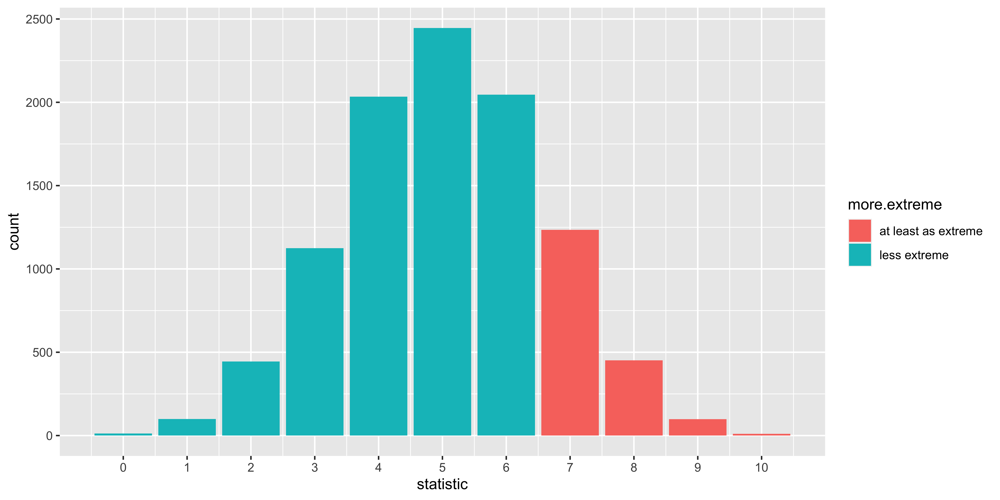
The details of this procedure will vary depending on our null hypothesis and statistic in question. Sometimes we know enough about the null hypothesis to literally generate new data. Sometimes, we only know what we think should be invariant under the null hypothesis, and we do some sort of permutation/randomization of the data to generate null samples. Nonetheless, the procedure and logic are roughly the same.
Critical values, alpha, power
Let’s say that we are going to run our coin-flipping experiment on a coin that we suspect is bent. We will:
(1) flip the coin 10 times
(2) calculate the number of heads, and
(3) “reject the null hypothesis” (of a fair coin) if the number of heads is surprisingly high.
What’s the probability that we will reject the null? To answer this question we need to decide a few things, and make some assumptions:
- what constitutes ‘surprisingly high?’ For now, let’s just say that we will declare 8 or more heads to be sufficiently “surprising” to reject the null. We will call this criterion the ‘critical value.’
critical.value = 8- Exactly how bent do we think the coin is? Does it come up heads 65% of the time? 70%? 100%? Obviously, the more bent we think the coin is, the more ‘surprising’ the outcomes we would expect to see from it. Let’s say we think our bent coin comes up heads 75% of the time.
Setting up the “Alternate hypothesis”
We have a way of sampling from the null (via sample.from.null), but now we need a way to sample possible outcomes we might see from the truly bent coin.
sample.from.alternate = function(n){sample(c('H', 'T'),
n,
prob=c(0.75, 0.25),
replace=TRUE)}If we sample from the alternative many times, and calculate our statistic for each sample, we get samples from the distribution of statistics that we expect to see from the bent coin we hypothesized.
alternate.samples = replicate(10000, statistic(sample.from.alternate(length(data))))
str(alternate.samples)## num [1:10000] 9 9 7 7 6 6 6 7 9 6 ...Figuring out “power”
Power is the probability that we will reject the null hypothesis for a sample taken from the “alternate” hypothesis. In our case, it just means: what proportion of statistics we simulated from the alternate hypothesis are going to be at least as big as the ‘critical value’ we chose?
( power = mean(alternate.samples >= critical.value) )## [1] 0.5325So there’s our answer: that’s the probability that we would reject the null in an experiment that flipped 10 times a bent coin that comes up heads with probability 0.75, given our critical value of 8.
Note that to figure out power, we have to make some assumption about what the not-null alternative is. Without that, we have no way to figure out what samples from the alternate hypothesis would look like, and what fraction of them we would reject the null for.
Figuring out “alpha”
What’s the probability that we would reject the null hypothesis if it turned out that we were flipping a fair coin after all? I.e., what’s the ‘false positive rate,’ how often would we reject the null, even though the null was true?
( alpha = mean(null.samples >= critical.value) )## [1] 0.0559Showing alpha, power
library(dplyr, quietly = T)
all.data <-
rbind(data.frame(n.heads = null.samples,
sampled.from = 'null'),
data.frame(n.heads = alternate.samples,
sampled.from = 'alternate')) %>%
mutate(null.rejected = ifelse(n.heads >= critical.value,
'reject null',
'retain null'),
label = paste0('sampled from ', sampled.from, " and " , null.rejected))
ggplot(all.data, aes(x=n.heads, fill=label))+
facet_grid(sampled.from~.)+
geom_bar(position='identity', alpha=1)+
scale_x_continuous(breaks = 0:10)+
scale_fill_manual(values = c('#009900', '#CC8888', '#990000', '#88CC88'))+
geom_vline(xintercept = critical.value-0.5, color='red', size=1)
The top panel shows the distribution of samples from the null hypothesis (a fair coin), the bottom panel shows samples from the alternate hypothesis (a bent coin that comes up heads with probability 0.75).
Dark green corresponds to the samples from the bent coin for which we would reject the fair-coin null. These are ‘correct rejections of the null,’ or ‘hits,’ and the probability that this happens for samples from the alternate hypothesis is called “power.”
Light green are samples from the null (fair coin) for which we would not reject the null. These are also correct, but they don’t have a common name.
Dark red are samples from the null (fair coin) for which we do reject the null. These are often called false positives, or Type I errors, and the probability that this happens for samples from the null hypothesis is called alpha.
Light red are samples from the alternate (bent coin) for which we do not reject the null. Thus they too are a mistake, often called ‘false negatives’ or Type II errors. The probability of this happening for samples from the alternate is 1 minus “power.”
Figuring out the critical value.
Above, we sort of just made up a critical value by saying that 8 or more heads out of 10 would be sufficiently surprising to reject. In general, we aren’t just going to make up a critical value, but we will instead pick a particular rate of false positives (Type I errors) that we are willing to tolerate. Thus, we will pick an alpha that we can be satisfied with (i.e., we will be content if we falsely reject the null hypothesis for this fraction of samples from the null hypothesis). So, let’s say that we will tolerate an alpha of 10%, so we want to find the maximum critical value, such that the proportion of samples from the null that would exceed it is 10% or less.
null.distribution <- data.frame(x = null.samples) %>%
group_by(x) %>%
count() %>%
ungroup() %>%
arrange(desc(x)) %>%
mutate(prob = n/sum(n)) %>%
mutate(prob.x.or.more = cumsum(prob))
head(null.distribution, 11)## # A tibble: 11 x 4
## x n prob prob.x.or.more
## <dbl> <int> <dbl> <dbl>
## 1 10 10 0.001 0.001
## 2 9 98 0.0098 0.0108
## 3 8 451 0.0451 0.0559
## 4 7 1235 0.124 0.179
## 5 6 2046 0.205 0.384
## 6 5 2446 0.245 0.629
## 7 4 2034 0.203 0.832
## 8 3 1125 0.112 0.945
## 9 2 444 0.0444 0.989
## 10 1 99 0.0099 0.999
## 11 0 12 0.0012 1So the probability of getting 10/10 heads is about 0.001 under the null, of getting 9 or 10 heads is about 0.01, of getting 8 9 or 10 heads is a bit over 0.05, and the probability of getting 7,8,9, or 10 heads is about 0.17. So we would use 8 as our critical value, as we would expect to see 8 or more heads from the null hypothesis fewer than 10% of the time.
Sampling distributions
TL; DR.
Frequentist statistics are based on the distribution of statistics we might expect to see if we were to run the experiment many times. These are called ‘sampling distributions.’
The most common one is the “sampling distribution of the sample mean,” which is Normal (assuming the central limit theorem holds), has a mean equal to the mean of the underlying population, and has a standard deviation equal to the standard deviation of the underlying population divided by the square root of n (the sample size). This standard deviation of the sampling distribution of the sample mean is often called the “standard error of the mean.”
Logic
Our data are a sample. If we were to rerun the experiment, we would get a different sample. The sampling distribution of something (technically, of a random variable) is the probability distribution describing the probability that this random variable will take on any possible value when we sample it. For instance, let’s consider a measurement of a sampled person’s IQ. Although we actually got some measurement, from the perspective of frequentist statistics, we must consider what other measurements we could have seen – so we say that the sampling distribution of a measurement of IQ is Normal with a mean of 100 and a standard deviation of 15 (this is how IQ is defined).
Just as it makes sense to talk about sampling distributions for measurements, or sets of measurements, it also makes sense to consider sampling distributions for statistics. For instance, we got a particular sample of 10 people’s IQs, and calculated the sample mean. Even though we saw one particular sample mean, we must consider what other sample means we could have seen (and their probability distribution) from carrying out our procedure of sampling 10 people and averaging their IQs (this is the sampling distribution of the sample mean). We can mathematically derive the probability distributions for sampling distributions of various statistics by relying on the statistical model we assume underlies our data.
library(ggplot2)
# here is a sampling function that generates a single sample iq.
sample.iq = function(){round(rnorm(1,100,15))}
# we can run it once to get one sample
sample.iq()## [1] 115# or 10 times to generate a sample of 10 iqs:
replicate(10, sample.iq())## [1] 64 77 104 117 89 82 105 83 98
## [10] 89# or 1000 times to get a sample of 1000 iqs
iqs.1000 = replicate(1000, sample.iq())
ggplot(data.frame(iq = iqs.1000), aes(x=iq))+geom_bar()
# we can generalize this to write a function that generates a sample of n iqs
sample.iqs = function(n){replicate(n, sample.iq())}
# Here is one possible sample mean of 10 sampled iqs
mean(sample.iqs(10))## [1] 107.8# We can generate 5 means of samples of 10 iqs:
replicate(5, mean(sample.iqs(10)))## [1] 100.2 103.5 103.3 103.0 103.4# or a sample of 1000 sample means of 10 sampled iqs
iq.means.1000 = replicate(1000, mean(sample.iqs(10)))
ggplot(data.frame(mean.iq = iq.means.1000), aes(x=mean.iq))+geom_bar()
# we can write a function that samples n iqs, and returns their mean:
sample.iq.mean = function(n){mean(sample.iqs(n))}
# now we can see how this Sampling Distribution of the Sample Mean changes as we change the sample size
df = rbind(data.frame(n=4, mean.iq = replicate(1000, sample.iq.mean(4))),
data.frame(n=16, mean.iq = replicate(1000, sample.iq.mean(16))),
data.frame(n=64, mean.iq = replicate(1000, sample.iq.mean(64))),
data.frame(n=256, mean.iq = replicate(1000, sample.iq.mean(256))))
ggplot(df, aes(x=mean.iq, color=as.factor(n), fill=as.factor(n)))+geom_density(alpha=0.2)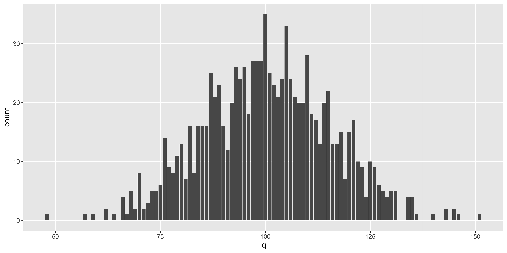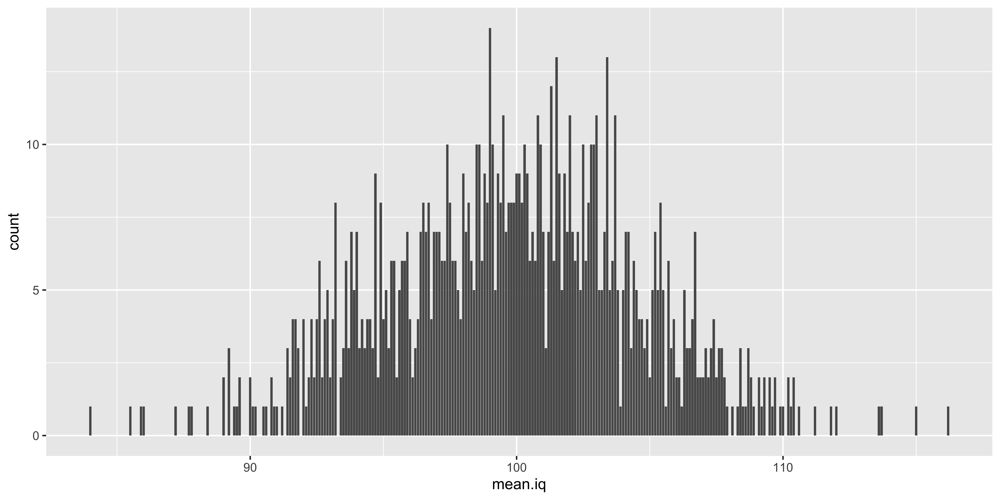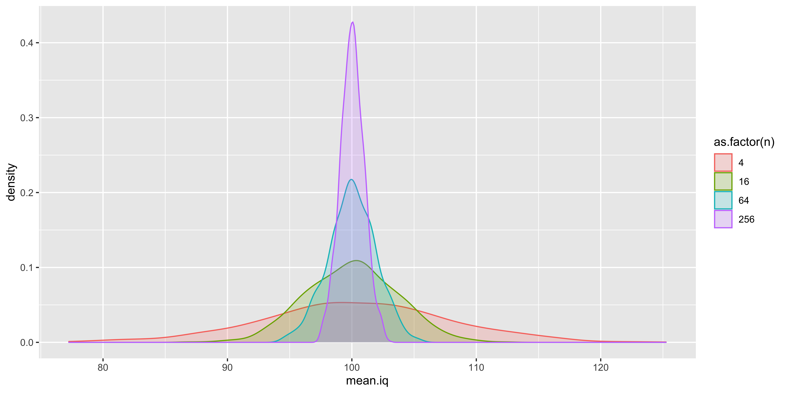
What this is designed to illustrate is that if we take a step back from the data we actually have and consider the data we could have had, we see that many different samples are possible, and many different sample means are possible. Which sample means are more or less likely depends on the size of our sample, and the sampling distribution of the individual data points. The resulting probability distribution of sample means we could have seen is the “sampling distribution of the sample mean.” Such sampling distributions exist for every statistic we could conjure up (sample standard deviation, sample kurtosis, etc.).
Expectation about the sampling distribution of the sample mean.
Formally, we assume that a sample of size \(n\) corresponds to \(n\) random variables independently and identically distributed according to the sampling distribution of the data:
\(\{x_1, ... x_n\} \sim P(X)\)
We can think of them all as different (independent) instantiations of the same random variable \(X\) – the random variable of a single data point.
We might not know the details of the probability distribution of \(X\), but we assume that it has some defined mean and variance (here we use these to refer to the properties of the random variable, obtained by expectation, not the sample):
\(\mu_X = \operatorname{Mean}\left[X\right] = \mathbb{E}[X] = \int\limits_{x \in X} x P(X=x) dx\)
\(\sigma_X^2 = \operatorname{Var}\left[X\right] = \mathbb{E}\left[{(X-\mu_X)^2}\right] = \int\limits_{x \in X} (x-\mu_X)^2 P(X=x) dx\)
The probability distribution of \(X\), which we might call the sampling distribution of a single data point, will also have some skewness, kurtosis, and higher order moments describing its shape.
The mean of \(n\) data points is defined as:
\(\bar x^{(n)} = \frac{1}{n}\sum\limits_{i=1}^n x_i\), (here we superscript x-bar with \((n)\) to make it explicit that this is the mean of a sample of size \(n\)).
What can we say about the sampling distribution of this sample mean? That is, what do we know about \(P(\bar x^{(n)})\)?
The central limit theorem tells us that if \(n\) is large enough, skewness, kurtosis, and higher order moments will all shrink towards their values under a normal distribution. So if \(n\) is large enough:
\(P(\bar x^{(n)}) = \operatorname{Normal}(\operatorname{Mean}[\bar x^{(n)}], \sqrt{\operatorname{Var}[\bar x^{(n)}]})\)
In other words, if \(n\) is large enough the sampling distribution of the sample mean will be approximately normal, with some mean and variance. What will the mean and variance of this distribution be?
To figure this out, we need to remember a few useful expectation identities:
For the sum of \(n\) independent random variables \({X_1, ..., X_n}\) all identically distributed as \(X\):
\(\operatorname{Mean}\left[\sum_{i=1}^n X_i\right]=n \operatorname{Mean}\left[X\right]\)
\(\operatorname{Var}\left[\sum_{i=1}^n X_i\right]=n \operatorname{Var}\left[X\right]\)
For the outcome of multiplying by a constant \(a\):
\(\operatorname{Mean}\left[a X\right]=a \operatorname{Mean}\left[X\right]\)
\(\operatorname{Var}\left[a X\right]=a^2 \operatorname{Var}\left[X\right]\)
From this we can figure out the mean of the sampling distribution of the sample mean.
\(\operatorname{Mean}[\bar x^{(n)}] = \operatorname{Mean}\left[\frac{1}{n}\sum\limits_{i=1}^n x_i\right]\)
Note that for clarity, we can break this up a bit by defining an intermediate variable: the sum of \(n\) samples: \(U^{(n)}\)
\(\bar x^{(n)} = \frac{1}{n} U^{(n)}\), where
\(U^{(n)} = \sum\limits_{i=1}^n x_i\)
Now what can we say about the mean and variance of \(U^{(n)}\)? From our expectation rules about the sums of \(n\) iid variables, we get:
\(\operatorname{Mean}[U^{(n)}] = \operatorname{Mean}\left[\sum\limits_{i=1}^n x_i\right] = n*\operatorname{Mean}[X] = n*\mu_X\)
\(\operatorname{Var}[U^{(n)}] = \operatorname{Var}\left[\sum\limits_{i=1}^n x_i\right] = n*\operatorname{Var}[X] = n*\sigma_X^2\)
And using our expectation rules about multiplying a random variable by a constant we get:
\(\operatorname{Mean}[\bar x^{(n)}] = \operatorname{Mean}\left[\frac{1}{n} U^{(n)}\right] = \frac{1}{n} \operatorname{Mean}[U^{(n)}] = \frac{1}{n}*n*\mu_X = \mu_X\)
\(\operatorname{Var}[\bar x^{(n)}] = \operatorname{Var}\left[\frac{1}{n} U^{(n)}\right] = \left(\frac{1}{n}\right)^2 \operatorname{Var}[U^{(n)}] = \left(\frac{1}{n}\right)^2*n*\sigma_X^2 = \frac{1}{n} \sigma_X^2\)
So, we learned that mean and variance of the sampling distribution of the sample mean are given by:
\(\operatorname{Mean}[\bar x^{(n)}] = \mu_X\)
\(\operatorname{Var}[\bar x^{(n)}] = \frac{1}{n} \sigma_X^2\)
From our calculation of the variance of the sampling distribution of the sample mean, we can get the standard deviation:
\(\operatorname{SD}[\bar x^{(n)}] = \sqrt{\frac{1}{n} \sigma_X^2} = \frac{\sigma_X}{\sqrt{n}}\)
Let’s see if all this hard work paid off by checking our answer with some simulations:
n = 20
mu.x = 100
sigma.x = 15
mu.xbar = mu.x
sigma.xbar = sigma.x/sqrt(n)
# so we expect the mean and standard deviation of the sample mean (xbar) to be:
c(mu.xbar, sigma.xbar)## [1] 100.000000 3.354102# let's generate a lot of simulated sample means, and see if they have the right mean and sd
sample.n = function(n){rnorm(n, mu.x, sigma.x)}
sample.xbar.n = function(n){mean(sample.n(n))}
sampled.xbars = replicate(10000, sample.xbar.n(n))
# do our sampled sample means have the mean and sd we predict?
c(mean(sampled.xbars), sd(sampled.xbars))## [1] 99.963928 3.374292Great, these are spot on, modulo some sampling variability (if we wanted to be really, really sure, we could increase the number of sample means we sample).
So now we have learned something about the sampling distribution of the sample mean:
\(\bar x^{(n)} \sim \operatorname{Normal}\left({\mu_X, \frac{\sigma_X}{\sqrt{n}}}\right)\)
This calculation about the sampling distribution of the sample mean is the basis of many statistical procedures.
Standard error (of the sample mean)
Often we are interested in how our sample mean (\(\bar x^{(n)}\)) differs from the population mean (\(\mu_X\)). What can we say about the distribution of the error of our sample mean: \(\bar x^{(n)} - \mu_X\)? Well, using our expectation rules for adding a constant, we can see that:
\(\operatorname{Mean}\left[{(\bar x^{(n)}-\mu_X)}\right] = 0\), and
\(\operatorname{SD}\left[{(\bar x^{(n)}-\mu_X)}\right] = \frac{\sigma_X}{\sqrt{n}}\).
Since the shape of the distribution will not change, we can say that our error is normally distributed:
\((\bar x^{(n)}-\mu_X) \sim \operatorname{Normal}\left({0, \frac{\sigma_X}{\sqrt{n}}}\right)\)
The fact that the sampling distribution of the error of our sample mean has a mean of 0 means that the arithmetic mean is an unbiased estimate of the population mean. The standard deviation of the sampling distribution of the error of the sample mean is called the standard error of the sample mean. In general, for any estimator, the standard deviation of the sampling distribution of the error of that estimator is called the standard error (we will see such standard errors for slopes in regression, linear contrasts, etc.).
Usually we will denote the standard error \(s_{\cdot}\) with a subscript, or \(\operatorname{se}\{\cdot\}\) with brackets:
\(\operatorname{se}\{\bar x^{(n)}\} = s_{\bar x^{(n)}} = \frac{\sigma_X}{\sqrt{n}}\)
(Technically, we would be more correct to call this \(\sigma_{\bar x^{(n)}}\), since its a standard error obtained from the population standard deviation, rather than the sample standard deviation, but let’s gloss over that for now.)
Statistics via the Normal distribution
Based on the central limit theorem and our derivation of the properties of the sampling distribution of the sample mean, we can undertake some classical (frequentist) statistics.
When we calculate the mean of \(n\) independent samples from a population with mean \(\mu_X\) and standard deviation \(\sigma_X\), the “sampling distribution of the sample mean” will follow roughly a Normal distribution, centered on the population mean, and with the standard deviation reduced by a factor of \(\sqrt{n}\):
\(\bar x^{(n)} \sim \operatorname{Normal}\left({\mu_X, \frac{\sigma_X}{\sqrt{n}}}\right)\)
If we calculate instead the sampling distribution of the error between the sample and population means, we get:
\((\bar x^{(n)}-\mu_X) \sim \operatorname{Normal}\left({0, \frac{\sigma_X}{\sqrt{n}}}\right)\)
We use the convenient phrase standard error of the sample mean to refer to the standard deviation of the sampling distribution of the sample mean (and also the standard deviation of the sampling distribution of the error – the deviation of the sample mean from the population mean). This standard error of the sample mean (or more accurately, its estimate) is something that you will often see as error bars in graphs (and the axis label or figure caption will say something like “mean \(\pm\) s.e.m.”).
(Normal) Null hypothesis significance testing (NHST)
Let’s say we go back in time to carefully study the case of Phineas Gage. We compose a battery to measure emotional decision-making, assemble a large number of normal/healthy patients, and administer this battery to all of them. We find that the emotional-decision making scores are distributed in the healthy population as a Normal distribution with mean=50, sd=5. We then measure Phineas Gage, and find he has a score of 39.
The NHST approach postulates a null hypothesis (H0): a statistical model of our data if the effect we care about does not exist in the world. In this case, our null model might be described as “Gage’s emotional decision-making score is a random sample from the distribution of those scores in the normal population”: \(x_{\text{Gage}} \sim \operatorname{Normal}(50, 5)\).
We would then calculate a “test statistic” on our data. Let’s start by just using Gage’s score as our test statistic: \(x_{\text{Gage}}\).
From the null model, we can obtain the “sampling distribution of the test statistic under the null hypothesis,” in this case, it is just the distribution of emotional decision-making scores in the healthy population: \(\operatorname{Normal}(50, 5)\)
Now we want to assess whether the observed test statistic was sufficiently extreme compared to its null hypothesis distribution. In general this is done by assessing whether a statistic at least as extreme as the one we saw will occur with a probability smaller than \(\alpha\) under the null hypothesis. The value of \(\alpha\) indicates how often we are willing to falsely reject the null hypothesis (that is, reject the null hypothesis when our observation came from the null hypothesis); generally, folks use \(\alpha=0.05\), meaning we are content to falsely reject the null 1 out of 20 times.
We can do this in several ways:
(1) define “critical” (cut-off) values which correspond to the \(\alpha\) value.
(2) compare our observed test statistic directly to the null distribution to obtain a p-value and see if it is less than alpha.
Let’s work through such a Z-test to see if Gage’s score was significantly lower (a one-tailed test) compared to the distribution of population scores.
gage = 39
H0.mu = 50
H0.sd = 5
alpha = 0.05
# Calculate a critical score such that p(score <= crit.score | H0) = alpha
crit.score = qnorm(alpha, H0.mu, H0.sd)
# plot things.
library(ggplot2)
xs = seq(20,70,by=0.1)
ggplot(data.frame(x = xs,
dens = dnorm(xs, H0.mu, H0.sd),
reject=ifelse(xs <= crit.score, "reject H0", "do not reject")),
aes(x=x, y=dens, fill=reject))+geom_ribbon(aes(ymin=0, ymax=dens))+
geom_vline(xintercept=gage, size=2, color="blue")+
geom_vline(xintercept=crit.score, size=1, color="black")This plot shows Gage’s score (blue line), the “critical score” such that P(score \(\leq\) crit.score | H0)=\(\alpha\) (black line), and the null hypothesis distribution colored based on whether or not it is above or below the critical value. The area under the curve below the critical value is equal to \(\alpha\) (in this case 0.05). The area under the curve at smaller values than Gage’s score (not shaded specially) corresponds to the “p-value.” It should be clear that if Gage’s score is more extreme than (in this case, below) the critical value, then the p-value will be smaller than \(\alpha\); thus whether we choose to compare our test statistic to the critical value, or the p-value directly to \(\alpha\), we will get the same answer.
# see if gage's score is lower than the critical score:
gage < crit.score## [1] TRUE# calculte p-value for gage's score by evaluating P(score <= gage | H0)
p.value = pnorm(gage, H0.mu, H0.sd)
p.value## [1] 0.01390345# compare p.value to alpha
p.value < alpha## [1] TRUETwo-tailed tests
So far we have done a “one-tailed” test, in the sense that we were only testing whether Gage’s score was really low, compared to the normal population. In general, you should favor two-tailed tests, which can reject the null hypothesis whether the score is too extreme in either the positive or negative direction. You should favor two-tailed tests when they are possible, since there are few cases when you would actually ignore an extremely high score even though you expected an extremely low one (which is what a one-tailed test presumes).
To run a two-tailed test on a Normal distribution we need to define two critical values (a positive and a negative one), such that P(score \(\leq\) low.crit | H0) = \(\alpha/2\) and P(score \(\geq\) high.crit ) = \(\alpha/2\). Note that we are “distributing” our \(\alpha\) probability across both high and low tails, to maintain the same rate of falsely rejecting the null hypothesis.
gage = 39
H0.mu = 50
H0.sd = 5
alpha = 0.05
# Calculate a critical score such that p(score <= crit.score | H0) = alpha
low.crit = qnorm(alpha/2, H0.mu, H0.sd)
high.crit = qnorm((1-alpha/2), H0.mu, H0.sd)
# plot things.
ggplot(data.frame(x = xs,
dens = dnorm(xs, H0.mu, H0.sd),
reject=ifelse(xs<=low.crit, "reject low", ifelse(xs>=high.crit, "reject high", "do not reject"))),
aes(x=x, y=dens, fill=reject, group=reject))+geom_ribbon(aes(ymin=0, ymax=dens))+
geom_vline(xintercept=gage, size=2, color="blue")+
geom_vline(xintercept=low.crit, size=1, color="black")+
geom_vline(xintercept=high.crit, size=1, color="black")
This plot shows Gage’s score (blue line), the high and low critical scores (black lines), and the null hypothesis distribution colored based on whether or not it would be rejected (by being either below the low critical score, or above the high critical score). The total area under the curve past the critical values is equal to \(\alpha\).
# see if gage's score is lower than the low critical score, or higher than the high critical score.
gage <= low.crit | gage >= high.crit## [1] TRUE# calculte p-value for gage's score by taking the minimum of the lower and upper tails, and multiplying by 2 (to get symmetric 2-tailed p-value)
p.value.low = pnorm(gage, H0.mu, H0.sd)
p.value.high = 1-pnorm(gage, H0.mu, H0.sd)
p.value = 2*min(p.value.low, p.value.high)
p.value## [1] 0.0278069# compare p.value to alpha
p.value <= alpha## [1] TRUENote that for the two tailed test, we see if the score is more extreme than either the low or high critical value, and we calculate a p-value by taking the minimum of the lower and upper tail probabilities, and multiplying by 2 (because of the symmetry of the Normal).
So what is this p-value that we’ve been calculating? It is the probability that a score sampled from the null hypothesis will be at least as as “extreme” as the one we observed. When we calculate a one-tailed test, “at least as extreme” corresponds to extremeness in the direction of the tail we are testing. When it is a two-tailed test, we need to figure out what the corresponding “extreme” score at the other tail would be (for a Normal, this is easy, as they are symmetric, so we can just multiply by 2).
What a p-value is not the probability that the null hypothesis is true (this requires the Bayesian calculation of P(H0 | data), rather than integrating over P(data | H0), as we have done).
Normal tests with sample means
Imagine that instead of having one Phineas Gage, there was an epidemic of exploding, scull-piercing tamping irons all piercing the frontal lobes of many railroad workers. You can administer your test to 5 such unlucky “Gages,” and you want to compare their average to the population. To do this, you will need to calculate their mean, and you will need to calculate the sampling distribution of the sample mean under the null hypothesis (that these individuals’ scores are samples from the overall population).
gages = c(39, 44, 38, 40, 51)
H0.mu = 50
H0.sd = 5
alpha = 0.05
# Calculate sample statistics: mean, and n
n = length(gages)
x.bar = mean(gages)
# Calculate mean and sd of sampling distribution of the sample mean under null
H0.xbar.mu = H0.mu
H0.xbar.sd = H0.sd/sqrt(n)
# Calculate a critical score such that p(score <= crit.score | H0) = alpha
low.crit = qnorm(alpha/2, H0.xbar.mu, H0.xbar.sd)
high.crit = qnorm((1-alpha/2), H0.xbar.mu, H0.xbar.sd)
# plot things.
ggplot(data.frame(x = xs,
dens = dnorm(xs, H0.xbar.mu, H0.xbar.sd),
reject=ifelse(xs<=low.crit, "reject low", ifelse(xs>=high.crit, "reject high", "do not reject"))),
aes(x=x, y=dens, fill=reject, group=reject))+geom_ribbon(aes(ymin=0, ymax=dens))+
geom_vline(xintercept=x.bar, size=2, color="blue")+
geom_vline(xintercept=low.crit, size=1, color="black")+
geom_vline(xintercept=high.crit, size=1, color="black")
Note that here we used our derived sampling distribution for the sample mean, consequently, the null distribution is skinnier. Otherwise, all the other calculations of p-values, critical statistic values, etc. is exactly the same:
# see if mean score of gages is lower than the low critical score, or higher than the high critical score.
x.bar <= low.crit | x.bar >= high.crit## [1] TRUE# calculte p-value for mean score of gages by taking the minimum of the lower and upper tails, and multiplying by 2 (to get symmetric 2-tailed p-value)
p.value.low = pnorm(x.bar, H0.xbar.mu, H0.xbar.sd)
p.value.high = 1-pnorm(x.bar, H0.xbar.mu, H0.xbar.sd)
p.value = 2*min(p.value.low, p.value.high)
p.value## [1] 0.0006767642# compare p.value to alpha
p.value <= alpha## [1] TRUEZ-scores and Z-tests
As we see, we now have enough machinery in place to do null hypothesis tests with the normal distribution. However, it is useful to introduce the notion of a z-score, as most classical instruction in statistics use such “standardized” statistics (rather than the raw scores and means as we have).
If \(x \sim \operatorname{Normal}(\mu_x, \sigma_X)\), and we apply a linear transformation to obtain a new variable \(z = (x-\mu_X)/\sigma_X\) we have calculated a z-score. Following our rules about expectations, we can show that this z-score will have a standard normal distribution, meaning it will be distributed with a mean of 0 and a standard deviation of 1:
\(z \sim \operatorname{Normal}(0,1)\)
Because such standardization is so easy to do, and yields the same standard Normal distribution whenever we apply it, it serves as the backbone of most classical statistical methods (which were developed at a time when calculating cumulative probabilities for arbitrary distributions was hard, and by standardizing our procedure, we could simply calculate the cumulative probability and quantile tables for just the standard distribution).
It is critical to note that whenever we calculate a z-score, we do so relative to some distribution. We can z-score someone’s height relative to the IQ distribution (e.g., \((69-100)/15\)), but that would be weird and useless. One warning sign that this is weird and useless is to consider the units of the resulting number. Normally, z-scores are unitless: they take a measurement in one unit (say inches), subtracts some mean in those units (yielding a difference in inches), and divides by the standard deviation of such measurements (also in inches), and thus we get a number that has no units. However, if we take height in inches, and divide by the standard deviation of IQ, we get a number in units of inches/IQ – such “unit analyses” are a good way to catch ourselves doing something incoherent.
Generally, we want to z-score some value relative to the (presumed) sampling distribution of that value. If we have an IQ score, we z-score it to the assumed sampling distribution of IQ. If we have the mean of 10 IQ scores, we z-score that sample mean to the sampling distribution of the sample mean of 10 IQ scores. Such z-scores will serve as our “test statistics” for Z-tests, and also will be used to estimate Normal confidence intervals.
Z-tests
To run the “Z-test” to assess whether the mean of our 5 Gages’ scores was sufficiently different from the null hypothesis distribution of the mean of 5 regular person scores we would first Z-transform it: subtract the mean of the sampling distribution of the sample mean, and divide by the standard deviation of the sampling distribution of the sample mean:
\(Z_{\bar x} = (\bar x - \mu_{\bar x})/\sigma_{\bar x}\)
\(Z_{\bar x} = (42.4 - 50)/2.236 = -3.4\)
We can now do the same null hypothesis calculation procedures we carried out earlier, but for the sampling distribution of the (appropriate) z-score:
gages = c(39, 44, 38, 40, 51)
H0.mu = 50
H0.sd = 5
alpha = 0.05
# Calculate sample statistics: mean, and n
n = length(gages)
x.bar = mean(gages)
# Calculate mean and sd of sampling distribution of the sample mean under null
H0.xbar.mu = H0.mu
H0.xbar.sd = H0.sd/sqrt(n)
Z.xbar = (x.bar - H0.xbar.mu)/H0.xbar.sd
H0.z.mu = 0 # we worked this out earlier: z scores ~ Normal(0,1)
H0.z.sd = 1
# Calculate a critical score such that p(score <= crit.score | H0) = alpha
low.crit = qnorm(alpha/2, H0.z.mu, H0.z.sd)
high.crit = qnorm((1-alpha/2), H0.z.mu, H0.z.sd)
# plot things.
zs = seq(-5,5,by=0.01)
ggplot(data.frame(z = zs,
dens = dnorm(zs, H0.z.mu, H0.z.sd),
reject=ifelse(zs<=low.crit, "reject low", ifelse(zs>=high.crit, "reject high", "do not reject"))),
aes(x=z, y=dens, fill=reject, group=reject))+geom_ribbon(aes(ymin=0, ymax=dens))+
geom_vline(xintercept=Z.xbar, size=2, color="blue")+
geom_vline(xintercept=low.crit, size=1, color="black")+
geom_vline(xintercept=high.crit, size=1, color="black")Since here we are using the sampling distribution of the z-score, the null distribution is Normal with mean 0 and standard deviation of 1. Otherwise, all the other calculations of p-values, critical statistic values, etc. is exactly the same, but we use the z-score of the sample mean as a test statistic:
# see if z-score of mean score of gages is lower than the low critical z-score, or higher than the high critical z-score.
Z.xbar <= low.crit | x.bar >= high.crit## [1] TRUE# calculte p-value for z-score of mean score of gages by taking the minimum of the lower and upper tails, and multiplying by 2 (to get symmetric 2-tailed p-value)
p.value.low = pnorm(Z.xbar, H0.z.mu, H0.z.sd)
p.value.high = 1-pnorm(Z.xbar, H0.z.mu, H0.z.sd)
p.value = 2*min(p.value.low, p.value.high)
p.value## [1] 0.0006767642# compare p.value to alpha
p.value <= alpha## [1] TRUENote that if we do this z-transformation, and consider a two-tailed test, we can take a number of shortcuts:
Because the z-score distribution is symmetric around 0, the low.crit score is the high.crit score multiplied by negative 1, so we can consider just the absolute critical score. Similarly, we need only consider the absolute value of our calculated z-scores to calculate two-tailed p-values. Moreover, we need not refer to the sampling distribution mean and standard deviation explicitly, since all the *norm functions in R assume that the default is the standard normal (z-score) distribution with mean=0 and sd=1.
# Check for significance by comparing absolute z score to critical z-score
abs.crit = abs(qnorm(alpha/2))
abs(Z.xbar) >= abs.crit ## [1] TRUE# Calculate (2-tailed) p-value using absolute z-score
p.value = 2*(1-pnorm(abs(Z.xbar)))
p.value## [1] 0.0006767642# Check for significance by comparing p.value to alpha
p.value <= alpha## [1] TRUEHopefully, it is clear at this point that these procedures are all doing the same thing, just with slight mathematical transformations that make some things less transparent, but other things more convenient. They all yield the same answer.
(Normal) Confidence intervals on the sample mean
Recall that the sampling distribution of the deviation of the sample mean from the population mean – the sampling distribution of the error of our sample mean – is given by:
\((\bar x^{(n)}-\mu_X) \sim \operatorname{Normal}\left({0, \sigma_{\bar x^{(n)}}}\right)\)
It is helpful to calculate this as a z-score:
\(\frac{\bar x^{(n)}-\mu_X}{\sigma_{\bar x^{(n)}}} \sim \operatorname{Normal}\left({0, 1}\right)\)
So the difference between our sample mean, and the population mean, in units of standard errors of the mean, will have a standard Normal distribution.
So if we want to define an interval around our sample mean, such that an interval defined this way will contain the true population mean 95% of the time, we can do so by finding a z-score interval that contains 95% of the z-scores, and then transforming these z-scores back into the units of sample means. One z-score range that will include 95% of the means can be constructed based on the z-score such that 2.5% of the z-scores are smaller than it, and the z-score such that 2.5% are larger than it (thus 95% of z-scores are between them):
low.z.crit = qnorm(0.025, 0, 1)
high.z.crit = qnorm(1-0.025, 0, 1)
c(low.z.crit, high.z.crit)## [1] -1.959964 1.959964We can convert these z-scores back to their original units by multiplying by the standard deviation, and adding the mean (reversing the calculation that yields z scores for specific x values):
\(x = z*\sigma + \mu\)
x.bar = mean(gages)
sd.xbar = H0.sd/sqrt(length(gages))
xbar.range = c(low.z.crit, high.z.crit)*sd.xbar + x.bar
xbar.range## [1] 38.01739 46.78261Here we called it “sd.xbar” because it is the standard deviation of the sampling distribution of the sample mean, but typically we will just refer to it as the standard error of the mean, or “se.xbar.”
Because the z-score distribution is symmetric, and by convention we chose to define a symmetric confidence interval, the low and high z scores are symmetric, and we typically calculate just the absolute value:
q = 0.95 # desired confidence interval
z.crit = abs(qnorm((1-q)/2, 0, 1))
xbar.range = x.bar + c(-1, 1)*z.crit*sd.xbarIn short, we can define the (z-score) confidence interval on the sample mean as:
\[\bar x \pm Z_{\alpha/2}^*\sigma_{\bar x}\]
Where \(\alpha = 1-q\), and \(q\) is the confidence interval percentile; \(Z_{\alpha/2}^*=\) abs(qnorm(alpha/2,0,1)). So for a 99% confidence interval, \(q=0.99\), \(\alpha=0.01\), and \(Z_{\alpha/2}^*=\) abs(qnorm(0.01/2,0,1)) = 2.5758293.
Relationship between confidence intervals and null hypothesis tests.
The use of \(\alpha\) as the critical value in a null hypothesis test, and as the interim calculation in confidence intervals is no accident.
We declare a (2-tailed) z-test as significant when the p-value is lower than \(\alpha\), in other words, when (the absolute value of) the difference between the sample mean and the null mean, in units of standard errors of the mean, is greater than \(Z_{\alpha/2}^*\):
\(\lvert\frac{\bar x - \mu_X^{H0}}{\sigma_{\bar x}}\rvert \geq Z_{\alpha/2}^*\)
With a bit of algebra, we can show that this means that we declare something as significant when:
\(\mu_X^{H0} \geq \bar x + \sigma_{\bar x} Z_{\alpha/2}^*\) OR
\(\mu_X^{H0} \leq \bar x - \sigma_{\bar x} Z_{\alpha/2}^*\)
And as we recall, the limits of a q% confidence interval are given by:
\(\bar x \pm \sigma_{\bar x} Z_{\alpha/2}^*\)
Thus, we see that if the null hypothesis mean does not fall in the \((1-\alpha)\) confidence interval, then we can reject that null hypothesis mean with a two-tailed significance test with a Type I error rate of \(\alpha\). So, checking whether the p-value for a null hypothesis z-test is less than \(\alpha=0.05\) is equivalent to checking whether the null hypothesis mean falls outside of the 95% confidence interval.
Special critical Z-values
Everyone using statistics would benefit from knowing a few special Z-scores, since they make back-of-the-envelope calculations easy when you want to evaluate some results in a talk or a poster.
\(P(Z \leq -1.96) = P(Z \geq 1.96) = 0.025\). In other words, 95% of the normal distribution is less than 1.96 standard deviations away from the mean. This means that a 95% confidence interval on a mean is \(\bar x \pm 1.96 \sigma_{\bar x}\). This also means that to pass a two-tailed Z-test with \(\alpha = 0.05\), the sample mean has to be more than 1.96 standard errors away from the null hypothesis mean.
\(P(Z \leq -0.6745) = P(Z \geq 0.6745) = 0.25\). 50% of the normal distribution is less than 0.67 standard deviations away from the mean; the first and third quartiles are the mean plus/minus 0.67 standard deviations. The interquartile range of a normal distribution will be 1.35 standard deviations.
\(P(Z \leq -1.645) = P(Z \geq 1.645) = 0.05\). This defines the 90% confidence intervals, and correspond to the critical Z-value for a one-tailed test with \(\alpha = 0.05\).
\(P(Z \leq 1) = P(Z \geq 1) = 0.15866\). About 16% of a normal distribution is more than 1 standard deviation away from the mean in either direction, meaning that 68.3% of the normal distribution is less than 1 standard deviation away from the mean.
These numbers can all be easily obtained via pnorm() and qnorm() in R, but often you might benefit from having them in your head.
Rarity of Z-tests and Z- confidence intervals
R doesn’t have a z-test function built in (although a few libraries offer one). This is because z-tests are so rarely done in practice, because carrying out a z-test requires that we know the population standard deviation. Consequently, when we reject the null hypothesis in a z-test, we reject the null of a particular population mean and and a particular population standard deviation. This is very rarely what we want, so we use t-tests instead (which assume that we estimate the standard deviation from the sample).
Furthermore, using z-tests to define confidence intervals is even more rare, because when we define a confidence interval, we do not want to assume particular parameters of the population distribution (like its mean, and standard deviation). In the vast majority of cases, we will use the t-distribution, rather than the Normal Z-distribution for our null hypothesis tests and confidence intervals on the mean.
What are these percents and probabilities?
It is important to consider what these percents and probabilities are. This interpretation of confidence intervals and probabilities will be the same for every single confidence interval and p value we calculate. So we will keep reiterating it.
So what is a p-value?
We obtained the p value by calculating the probability with the following logic: we calculated the sampling distribution of the test statistic if we were to take many samples (of the same size as ours) from the null hypothesis population, calculate the test statistic on each of those samples, then look at the histogram of those samples. The proportion of those samples that are more extreme than the test-statistic we saw in our actual sample, is the p-value.
Let’s do this explicitly:
gages = c(39, 44, 38, 40, 51)
H0.mu = 50
H0.sd = 5
# A function to calculate the z statistic for a sample mean given H0 mean and sd
z.stat = function(sample){(mean(sample)-H0.mu)/(H0.sd/sqrt(length(sample)))}
# our z statistic.
(our.z.stat = z.stat(gages))## [1] -3.398823# a function to sample n data points from the H0 distribution
sample.from.H0 = function(n){rnorm(n,H0.mu,H0.sd)}
# one sample of the same size as ours from the H0 distribution
(one.H0.sample = sample.from.H0(length(gages)))## [1] 53.05510 50.03932 48.13520 49.41828
## [5] 54.26727# the z-statistic for the H0 sample.
(one.H0.z.stat = z.stat(one.H0.sample))## [1] 0.4396273# sample lots of z statistics from the H0 distribution
many.H0.z.stats = replicate(10000, z.stat(sample.from.H0(length(gages))))
# show a histogram of these H0-sampled z statistics.
ggplot(data.frame(z = many.H0.z.stats,
z.vs.ours=ifelse(abs(many.H0.z.stats)>=abs(our.z.stat),
"more extreme",
"less extreme")),
aes(x=z, fill=z.vs.ours))+
geom_histogram()+
geom_vline(xintercept=our.z.stat, color="blue")
# our p value calculated by asking what fraction of H0-sampled z-statistics
# are larger than ours (in absolute value)
(p.value = sum(abs(many.H0.z.stats)>=abs(our.z.stat))/length(many.H0.z.stats))## [1] 4e-04
Of course, when we do a z-test, we generally do this analytically, rather than numerically as we have here (by literally simulating a bunch of possible samples from the null hypothesis), which eliminates the need for sluggish computation. However, the logic of what we did is the same: we calculated the p-value as the proportion of samples from the null hypothesis that would be at least as extreme as the one we saw.
So what does the p-value mean? It tells us what fraction of null hypothesis samples would be at least as extreme as ours, given our test statistic. It is a calculation based on \(P(\mbox{data} \mid \mbox{H0})\). More generally, it tells us something about how this procedure is expected to behave when applied to the null hypothesis: if this procedure were applied to samples from some null hypothesis model, this is what we expect to see. Similarly, \(\alpha\) tells us: if we reject the null based on this significance procedure, we expect the procedure to reject samples from the null hypothesis \((100*\alpha)\)% of the time.
What does the “percent” in a confidence interval mean?
We calculated a confidence interval based on the sampling distribution of the error of the mean from the population mean.
Let’s simulate this procedure by picking some random true population mean, true population sd, and some sample size. Then we simulate a sample from that population, and calculate a confidence interval from that sample.
# a function to get the critical z value for a 100q% interval
z.crit = function(q){abs(qnorm((1-q)/2))}
# a function to calculate the standard error of the mean for a given
# sample and null hypothesis sd.
sem = function(x,H0.sd){H0.sd/sqrt(length(x))}
# a function to get the mean and confidence interval (min, max)
get.CI = function(x, q, H0.sd){
return(
c("min"=(mean(x)-z.crit(q)*sem(x,H0.sd)),
"mean"=mean(x),
"max"=(mean(x)+z.crit(q)*sem(x,H0.sd)))
)}
# a hypothetical true mean.
true.mean = rnorm(1,0,5)
# a hypothetical true standard deviation
H0.sd = exp(rnorm(1,1,0.5))
# a hypothetical sample size:
n = rgeom(1,0.2)+2
# a hypothetical sample of size n from this "true distribution"
x = rnorm(n,true.mean,H0.sd)
# the sample mean and 90% confidence interval for this sample
(ci = get.CI(x, 0.9, H0.sd))## min mean max
## 1.329743 2.259383 3.189023So this is one such randomly generated sample mean and resulting confidence interval.
Now, we can ask whether the true population mean was contained within that confidence interval:
# let's define a function to tell us whether the true mean is inside the confidence interval
mean.in.ci = function(true.mean, ci){
ci['min'] <= true.mean & true.mean <= ci['max']
}
# is the true mean inside the confidence interval? (ignore the vector name "min" carryover)
(mean.in.ci(true.mean, ci))## min
## TRUESo any one confidence interval either includes, or does not include, the true population mean.
So what does the percent in a confidence interval mean? It’s a statement not about the current data, or the current population mean in question. It is a statement about the confidence interval procedure. Specifically, it tells us what fraction of all confidence intervals generated this way, in all experiments, will contain their respective population mean. Let’s simulate this.
# Now let's consider many different true populations, samples from them, and the resulting CI
results = data.frame()
for(i in 1:100){
true.mean = rnorm(1,0,5)
H0.sd = exp(rnorm(1,1,0.5))
n = rgeom(1,0.2)+2
x = rnorm(n,true.mean,H0.sd)
ci = get.CI(x, 0.9, H0.sd)
results = rbind(results,
data.frame("experiment" = i,
"mean"=ci['mean'],
"ci.min"=ci['min'],
"ci.max"=ci['max'],
"true.mean"=true.mean,
"mean.in.ci"=mean.in.ci(true.mean, ci)))
}
ggplot(results, aes(x=as.factor(experiment),
y=mean,
ymin=ci.min,
ymax=ci.max,
color=mean.in.ci))+
geom_pointrange()+
geom_point(aes(y=true.mean), size=2, color="black")+
coord_flip()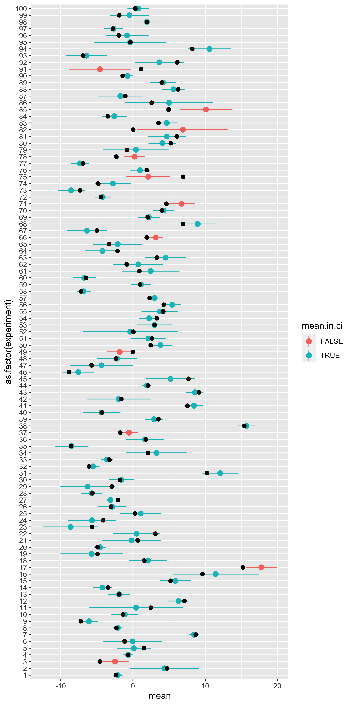
Here, each horizontal line represents a particular experiment, with a particular true population mean (black dot), some H0 standard deviation, and some random sample. That random sample is used to define a mean and a 90% confidence interval (point+range). If the confidence interval contains the true mean, it is blue, otherwise it is red.
So what fraction of these intervals contained the true population mean?
# fraction of confidence intervals that include the true mean
(sum(results$mean.in.ci)/nrow(results))## [1] 0.89Note that the result of “how many of our 100 sampled intervals include their true mean” will be subject to sampling variation (binomial with n=100, p=q=0.9, here). If we increase the number of sampled experiments and intervals, we will be less likely to deviate much from 0.9.
So, the percent in a confidence interval describes the probability that an interval constructed using this method will include the corresponding value (provided the distribution assumptions are met).
All frequentist probabilities and percents have this sort of interpretation: they are statements about the procedure – how often will the procedure reject a sample from the null, how often will a confidence interval calculated in this way contain the true mean, etc.
Null hypothesis significance testing
In statistics via the Normal we covered the basic logic and application of the sampling distribution of the sample mean to the problem of testing a null hypothesis about the population.
Null hypothesis testing follows this procedure:
- We have some structure we are interested in (the “effect”).
- We define a “statistic” to measure this structure.
- We define a “null” model of the data: a statistical model that generates data like ours, but lacking the effect we are interested in.
- We figure out the sampling distribution of our statistic under the null hypothesis.
- We compare the statistic value from our data, to its null hypothesis sampling distribution, to see if our statistic is sufficiently extreme under the null, for us to say that we “reject the null.”
Type 1 error rate: alpha (\(\alpha\))
To be more specific, in step 5 we calculate the probability that a statistic at least as extreme as ours would be obtained from samples from the null hypothesis – we call this the p-value. We decide on a significance level, usually called alpha (\(\alpha\)): this corresponds to the largest p-value we are willing to declare significant (and thus reject the null). Consequently, the chosen alpha value (typically 0.05), corresponds to the probability that we would reject the null hypothesis for a sample from the null hypothesis. Thus, the alpha value corresponds to the rate at which we are willing to falsely reject the null hypothesis (reject it, when it is true); This is known as the rate of Type I error.
We can get a sense for this via simulation. We will use the z-test statistic comparing a sample from the null to the null mean (and standard error). We will calculate its p-value, and see if it would be rejected. Since all of these samples are, by definition, sampled from the null, any sample which we declare significantly different form the null is a false rejection of the null: a type 1 error.
H0.mean = 100
H0.sd = 15
alpha = 0.05
z.stat = function(x){(mean(x)-H0.mean)/(H0.sd/sqrt(length(x)))}
p.value = function(z){2*pnorm(-abs(z))}
is.significant = function(p.val, alpha){p.val <= alpha}
sample.from.null = function(n){rnorm(n,H0.mean,H0.sd)}
df = data.frame(zs = replicate(1000, z.stat(sample.from.null(10))))
df$p.value = p.value(df$zs)
df$significant = is.significant(df$p.value, alpha)
library(ggplot2)
ggplot(df, aes(x=zs, fill=significant))+geom_histogram()
(type.I.error.rate = sum(df$significant)/nrow(df))## [1] 0.054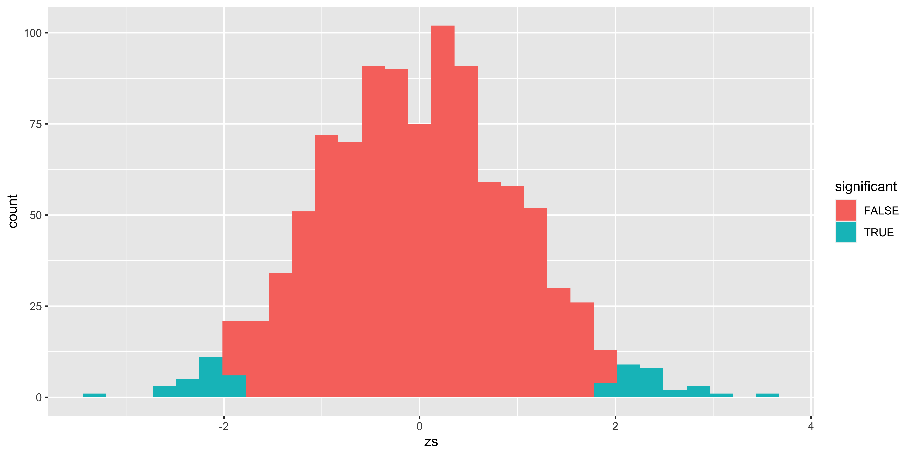
Of course, nothing about this simulation should reveal anything new, but perhaps it illustrates this basic point adequately well.
The “alternate model”
So far, we have only considered one statistical model: the null model with no effect. This is sufficient to obtain a p-value and test the null hypothesis. However, this only tells us the probability of rejecting (or not) the null hypothesis given data from the null hypothesis. It does not tell us what might happen if the null hypothesis is false.
To calculate the probability of rejecting the null hypothesis when the null hypothesis is false (called power) we need a statistical model of the data in the case of a false null. This is the alternate hypothesis model. From this we can calculate power, as well as the Type II error rate (the probability of not rejecting the null hypothesis, when it is indeed false).
To set up an alternate model, we will simply set up something like the null model, but with some key difference – an effect size. For simplicity, let’s say that our alternate model is a normal distribution with the same standard deviation, and with a mean that is 8 points higher than the null mean:
H0.mean = 100
H0.sd = 15
H1.mean = 108
H1.sd = 15
alpha = 0.05
# we will still calculate the z score, and p-value *relative to the null hypothesis*!
z.stat = function(x){(mean(x)-H0.mean)/(H0.sd/sqrt(length(x)))}
p.value = function(z){2*pnorm(-abs(z))}
is.significant = function(p.val, alpha){p.val <= alpha}
# Note: here we are using the H1 mean and sd!
sample.from.alt = function(n){rnorm(n,H1.mean,H1.sd)}
df = data.frame(zs = replicate(1000, z.stat(sample.from.alt(10))))
df$p.value = p.value(df$zs)
df$significant = is.significant(df$p.value, alpha)
library(ggplot2)
ggplot(df, aes(x=zs, fill=significant))+geom_histogram()
# Power: the probability that we will reject a sample from the alternate model.
(power= sum(df$significant)/nrow(df))## [1] 0.388# Type II error rate: the probability that we *fail* to reject the null for a sample from the alternate model
(type.II.error.rate = (1-power))## [1] 0.612# or alternatively:
(type.II.error.rate = sum(df$significant==FALSE)/nrow(df))## [1] 0.612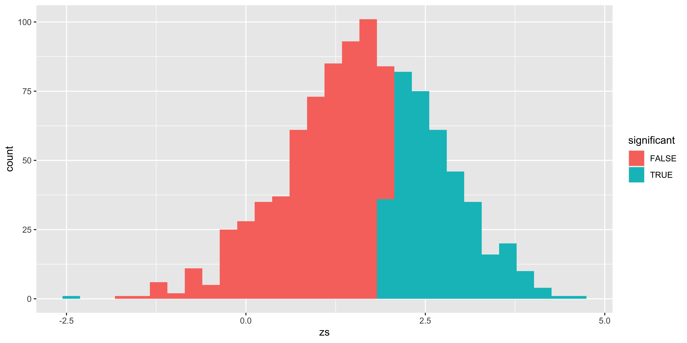
Effect size
The effect size is the magnitude of the deviation of the alternate model from the null model. While we can talk about the effect size in our case as the raw difference in means (100 for null, 108 for alternate, so 8 points), it is generally more convenient to talk about the effect in standardized units. This way, we get similar effect size estimates regardless of the units we are considering (e.g., centimeters, inches, etc).
For comparing differences in means, we generally use “Cohen’s d”: the difference in means in units of standard deviation. (alternate mean minus null mean) divided by standard deviation:
\[d' = (\mu_X^{H_1} - \mu_X^{H_0})/\sigma_X\]
In our case, we said that the H1 mean was 108, the H0 mean was 100, and the standard deviation was 15, consequently the effect size is (108-100)/15 = 8/15.
Calculating power from effect size
With this definition, we can calculate power (using a normal z-test), simply by knowing the size of the sample, and the size of the true effect size (Cohen’s d). The power, or the probability that we will reject the null hypothesis, is the probability that a z-statistic obtained for a sample from the null hypothesis will exceed the critical z value.
\(P(\mbox{significant} | H_1) = P(\lvert z^{H_1} \rvert \geq \lvert z^*_{\alpha/2} \rvert)\)
We must now go on a somewhat long-winded, algebraic exercise to calculate the sampling distribution of the z-statistic (relative to the null hypothesis) for samples of size n from the alternate hypothesis.
\(\bar x_{(n)} \mid H_1 \sim \operatorname{Normal}(\mu_X^{H_1}, \sigma_X^{H_1}/\sqrt{n})\)
We know that:
\(\sigma_X = \sigma_X^{H_1} = \sigma_X^{H_0}\) (by virtue of the assumption that the alternate model has the same standard deviation as the null model!), and
\(\mu_X^{H_1} = \mu_X^{H_0} + d*\sigma_X\) (this is what the effect size – Cohen’s d – tells us). Consequently:
\(\bar x_{(n)} \mid H_1 \sim \operatorname{Normal}(\mu_X^{H_0} + d*\sigma_X, \sigma_X/\sqrt{n})\)
If we calculate the z-score of a sample mean from the alternate model, relative to the sampling distribution of the sample mean from the null model (as we do when we do significance testing), we get (by virtue of our rules about how to linearly transform normally distributed variables):
\(z_{\bar x_{(n)}}^{H_1} = \frac{\bar x_{(n)}-\mu_X^{H_0}}{\sigma_X/\sqrt{n}} \mid H_1 \sim \operatorname{Normal}(d*\sqrt{n}, 1)\)
We can then compare this to the critical z value.
alpha = 0.05
z.crit = abs(qnorm(alpha/2))
n = 10
d = 8/15 # the effect size we built into the alternate model in the previous section
(p.reject.H0.low = pnorm(-z.crit, d*sqrt(n),1)) # probability we would reject on the low end## [1] 0.000132912(p.reject.H0.high = 1-pnorm(z.crit, d*sqrt(n), 1)) # probability we would reject on the high end.## [1] 0.3922668(p.reject.H0 = p.reject.H0.low + p.reject.H0.high) # this is the power## [1] 0.3923997Notice that in this case (with some considerable effect size, and the standard deviation of the alternate equal to the standard deviation of the null model), there is a negligible probability that we would reject the null for alternate model samples on the other side of the null (in this case, rejecting alternate samples for being too low). Consequently, we can often ignore that lower tail, and simply calculate power from the tail that the effect size is on (by using the absolute value of the effect size).
(p.reject.H0.high = 1-pnorm(abs(qnorm(alpha/2)), abs(d)*sqrt(n), 1))## [1] 0.3922668Visualizing alpha and power
Our example so far can be shown in one graph (with a bit of ggplot tinkering):
alpha = 0.05
n = 10
d = 8/15
z.crit = abs(qnorm(alpha/2))
z = seq(-4,8,by=0.01)
df = rbind(data.frame(z=z,
p=dnorm(z),
reject=ifelse(z>=z.crit, "H0 sig. high", ifelse(z<=-z.crit, "H0 sig. low", "H0 not sig")),
distribution="H0"),
data.frame(z=z,
p=dnorm(z,d*sqrt(n),1),
reject=ifelse(z>=z.crit, "H1 sig. high", ifelse(z<=-z.crit, "H1 sig. low", "H1 not sig")),
distribution="H1"))
ggplot(subset(df, df$distribution=="H0"),
aes(x=z, y=p, fill=reject, color=distribution))+
geom_area(alpha=0.3)+
geom_area(data = subset(df, df$distribution=="H1"), alpha=0.3)+
geom_vline(xintercept =z.crit)+
scale_fill_manual(values = c("black", "red", "red", "orange", "#008888", "#008888"))+
scale_color_manual(values=c("#880000", "#008800"))Here, the distribution outlined in red is the sampling distribution of z scores from the null hypothesis; the distribution outlined in green is the sampling distribution of z scores (relative to the null sampling distribution) sampled from the alternate hypothesis. The red area corresponds to the probability of a type I error (alpha): rejecting a sample from the null hypothesis. The grey are corresponds to the probability of correctly failing to reject the null (for a sample from the null). The yellow area is the Type II error (beta): the probability of incorrectly failing to reject the null (for a sample from the alternate), and the teal area is the power – the probability of correctly rejecting the null (for a sample from the alternate).
How power changes.
Here we will considering how changes to effect size (\(d\)), sample size (\(n\)), and alpha (\(\alpha\)) influence power.
First, let’s define a few functions that will be helpful to us.
getPower = function(alpha, n, d){
z.crit = abs(qnorm(alpha/2))
p.reject.H0.low = pnorm(-z.crit, d*sqrt(n),1)
p.reject.H0.high = 1-pnorm(z.crit, d*sqrt(n), 1)
return(p.reject.H0.low + p.reject.H0.high)
}
showAreas = function(alpha, n, d){
z.crit = abs(qnorm(alpha/2))
z = seq(-4,8,by=0.01)
df = rbind(data.frame(z=z,
p=dnorm(z),
reject=ifelse(z>=z.crit, "H0 sig. high", ifelse(z<=-z.crit, "H0 sig. low", "H0 not sig")),
distribution="H0"),
data.frame(z=z,
p=dnorm(z,d*sqrt(n),1),
reject=ifelse(z>=z.crit, "H1 sig. high", ifelse(z<=-z.crit, "H1 sig. low", "H1 not sig")),
distribution="H1"))
g = ggplot(subset(df, df$distribution=="H0"),
aes(x=z, y=p, fill=reject, color=distribution))+
geom_area(alpha=0.3)+
geom_area(data = subset(df, df$distribution=="H1"), alpha=0.3)+
geom_vline(xintercept = z.crit)+
scale_fill_manual(values = c("black", "red", "red", "orange", "#008888", "#008888"))+
scale_color_manual(values=c("#880000", "#008800"))+
ggtitle(sprintf("alpha = %0.2f power = %0.2f",
alpha,
getPower(alpha,n,d)))+
theme(legend.position="none")
return(g)
}Changing alpha (\(\alpha\))
library(gridExtra)
n = 10
d = 0.5
alpha = c(0.01, 0.05, 0.1)
g1 = showAreas(alpha[1], n, d)
g2 = showAreas(alpha[2], n, d)
g3 = showAreas(alpha[3], n, d)
grid.arrange(g1,g2,g3,ncol=3)So, if we are willing to increase our Type I error rate, we can increase our power (by virtue of rejecting more of everything). This is not how we want to increase power, since our goal is not to trade one kind of error for another. Clearly, we don’t just want to move our cutoff, but want to further separate the distributions.
Changing effect size (\(d\))
library(gridExtra)
n = 10
d = c(0.25, 0.5, 0.75)
alpha = 0.05
g1 = showAreas(alpha, n, d[1])
g2 = showAreas(alpha, n, d[2])
g3 = showAreas(alpha, n, d[3])
grid.arrange(g1,g2,g3,ncol=3)Let’s say we can somehow increase our effect size (perhaps by finding better, less noisy measurements?, or adopting a stronger manipulation?). If this happens, we effectively increase the separation between the null and alternate distributions, and increase power without lowering alpha or changing the sample size! In practice, it’s often tricky to increase the effect size though, so while we would like to do that, it’s usually not in our power.
Changing sample size (\(n\))
library(gridExtra)
n = c(4, 8, 16)
d = 0.5
alpha = 0.05
g1 = showAreas(alpha, n[1], d)
g2 = showAreas(alpha, n[2], d)
g3 = showAreas(alpha, n[3], d)
grid.arrange(g1,g2,g3,ncol=3)In practice, the easiest way to increase power is to increase the sample size. This effectively also separates the two distributions further, because the distance between the two sampling distributions of z-scores is \(d*\sqrt{n}\). So we can get an effective separation that scales with the square root of the sample size.
Calculating n for a desired level of power.
If we have a particular effect size, we can calculate the sample size required to achieve a particular level of power. (Here, we are using the simplified, one-tail power, which works if our assumption of equal variance in null and alternate is correct, and the effect size is not zero.)
power = 1-pnorm(abs(qnorm(alpha/2)), abs(d)*sqrt(n), 1))
With algebra, we get:
pnorm(abs(qnorm(alpha/2)), abs(d)*sqrt(n), 1)) = 1-power
Since the quantile function (qnorm) is the inverse of the cumulative distribution (pnorm)…
abs(qnorm(alpha/2)) = qnorm(1-power, abs(d)*sqrt(n), 1)
Since the normal is invariant to shifts in the mean…
abs(qnorm(alpha/2)) = qnorm(1-power) + abs(d)*sqrt(n)
We also know that the quantiles of the standard normal are symmetric around 0, so we can get rid of an absolute value…
qnorm(1-alpha/2) - qnorm(1-power)= abs(d)*sqrt(n)
((qnorm(1-alpha/2)-qnorm(1-power))/abs(d))^2=n
So, for a particular level of power that we might want, we can estimate the required sample size as:
n.for.power = function(power,alpha,d){
return(((qnorm(1-alpha/2)-qnorm(1-power))/abs(d))^2)
}
alpha = 0.05
d = 0.3
power = seq(0.05,0.95,by=0.05)
df = data.frame()
for(i in 1:length(power)){
df = rbind(df,
data.frame(power=power[i],
d=d,
alpha=alpha,
required.n=n.for.power(power[i], alpha, d)))
}
df## power d alpha required.n
## 1 0.05 0.3 0.05 1.103273
## 2 0.10 0.3 0.05 5.113816
## 3 0.15 0.3 0.05 9.476764
## 4 0.20 0.3 0.05 13.896561
## 5 0.25 0.3 0.05 18.360489
## 6 0.30 0.3 0.05 22.898250
## 7 0.35 0.3 0.05 27.550025
## 8 0.40 0.3 0.05 32.361569
## 9 0.45 0.3 0.05 37.385180
## 10 0.50 0.3 0.05 42.682876
## 11 0.55 0.3 0.05 48.331478
## 12 0.60 0.3 0.05 54.430511
## 13 0.65 0.3 0.05 61.115102
## 14 0.70 0.3 0.05 68.578522
## 15 0.75 0.3 0.05 77.114961
## 16 0.80 0.3 0.05 87.209775
## 17 0.85 0.3 0.05 99.759969
## 18 0.90 0.3 0.05 116.749145
## 19 0.95 0.3 0.05 144.385667The noteworthy thing here is that achieving a level of power that folks conventionally recommend (0.8), requires a very large sample size for common, modest (d=0.3) effect sizes.
In practice, when you want to calculate power, I recommend using the pwr package in R, rather than undertaking this manual calculation (especially because there will not be an easy analytical solution as most tests rely on distributions whose shape varies with sample size.)
Sign and magnitude errors.
Instead of dividing up errors into Type I/II (falsely rejecting, and falsely failing to reject the null), it is helpful instead to consider errors in sign and magnitude of the effect we report as significant. This philosophy makes a lot of sense if you consider that very few effects are truly zero (so rejecting the null isn’t that important), but are instead small (and variable), and we need to know their size and direction.
A sign error amounts to getting the direction of the effect wrong. A magnitude error amounts to overestimating the effect size.
Magnitude errors.
Consider one of our earlier plots of the rejected and retained null hypotheses for samples from the null, and samples from the alternate with a particular effect size.
alpha = 0.05
n = 10
d = 0.5
z.crit = abs(qnorm(alpha/2))
z = seq(-4,8,by=0.01)
df = rbind(data.frame(z=z,
p=dnorm(z),
reject=ifelse(z>=z.crit, "H0 sig. high", ifelse(z<=-z.crit, "H0 sig. low", "H0 not sig")),
distribution="H0"),
data.frame(z=z,
p=dnorm(z,d*sqrt(n),1),
reject=ifelse(z>=z.crit, "H1 sig. high", ifelse(z<=-z.crit, "H1 sig. low", "H1 not sig")),
distribution="H1"))
ggplot(subset(df, df$distribution=="H0"),
aes(x=z, y=p, fill=reject, color=distribution))+
geom_area(alpha=0.3)+
geom_area(data = subset(df, df$distribution=="H1"), alpha=0.3)+
geom_vline(xintercept = z.crit)+
scale_fill_manual(values = c("black", "red", "red", "orange", "#008888", "#008888"))+
scale_color_manual(values=c("#880000", "#008800"))We see that the bulk of the ‘rejected’ alternate hypothesis distribution falls on the wrong (do not reject) side of the critical z value. Thus, all the z scores we reject were abnormally high as far as samples from the alternate distribution go. Consequently, if we consider the effect size we might estimate from the sample (which we can get as \(z/\sqrt{n}\)), we would expect an overestimate, on average. This is precisely what we see when we calculate the average estimated effect from samples from the alternate that were statistically significant.
library(dplyr, quietly=TRUE)
df$d.est = df$z/sqrt(n)
df %>% filter(distribution == "H1", reject == "H1 sig. high") %>%
summarize(true.d = d, avs.est.d = sum(d.est*p)/sum(p))## true.d avs.est.d
## 1 0.5 0.832083This basic effect is sometimes called the “statistical significance filter”: findings that are significant, are likely to overestimate the true effect size in the population. Moreover, it’s easy to convince ourselves that the lower the power, the worse the overestimation: If power=100%, then we get 0 overestimation.
Sign errors
The other kind of error worth considering is the probability that we get the direction of the effect wrong. Although with a reasonable effect size, and no difference in variance between the null and alternate hypothesis, this probability is quite small, it might become intollerable with low power.
alpha = 0.05
n = 10
d = 0.05
z.crit = abs(qnorm(alpha/2))
z = seq(-4,8,by=0.01)
df = rbind(data.frame(z=z,
p=dnorm(z),
reject=ifelse(z>=z.crit, "H0 sig. high", ifelse(z<=-z.crit, "H0 sig. low", "H0 not sig")),
distribution="H0"),
data.frame(z=z,
p=dnorm(z,d*sqrt(n),1),
reject=ifelse(z>=z.crit, "H1 sig. high", ifelse(z<=-z.crit, "H1 sig. low", "H1 not sig")),
distribution="H1"))
ggplot(subset(df, df$distribution=="H0"),
aes(x=z, y=p, fill=reject, color=distribution))+
geom_area(alpha=0.3)+
geom_area(data = subset(df, df$distribution=="H1"), alpha=0.3)+
geom_vline(xintercept = z.crit)+
geom_vline(xintercept = -z.crit)+
scale_fill_manual(values = c("black", "red", "red", "orange", "#008888", "#008888"))+
scale_color_manual(values=c("#880000", "#008800"))With low power (arising from small effect and sample sizes), we see that many of our rejections of the null hypothesis based on samples from the null are actually coming from the wrong side of the null! We can calculate their proportion as a function of power. (Note that here we are interested in power to reject on both the correct, and incorrect tail; and we don’t care about whether power comes from effect size or sample size, so we adopt a somewhat tricky equivalence, which you can ignore.)
pow = function(m,z.crit){pnorm(-z.crit,m,1)+1-pnorm(+z.crit,m,1)}
p.sign.error = function(des.pow,alpha){
z.crit = abs(qnorm(alpha/2))
mz = seq(0,4,by=0.01)
m = mz[which.min((pow(mz,z.crit)-des.pow)^2)]
return(pnorm(-z.crit,m,1)/(pnorm(-z.crit,m,1) + 1 - pnorm(+z.crit,m,1)))
}
alpha = 0.05
df = data.frame()
power = seq(0.05,0.15,by=0.01)
for(i in 1:length(power)){
df = rbind(df,
data.frame(power=power[i],
alpha=alpha,
p.sign.err = p.sign.error(power[i],alpha)))
}
df## power alpha p.sign.err
## 1 0.05 0.05 0.50000000
## 2 0.06 0.05 0.20482240
## 3 0.07 0.05 0.12289824
## 4 0.08 0.05 0.08414848
## 5 0.09 0.05 0.06204462
## 6 0.10 0.05 0.04544329
## 7 0.11 0.05 0.03465503
## 8 0.12 0.05 0.02634886
## 9 0.13 0.05 0.02093070
## 10 0.14 0.05 0.01660337
## 11 0.15 0.05 0.01378320What this tells us is that a null hypothesis z-test, with the standard deviation correctly matched between the true alternate and the null, will declare a sample from the alternate as significant, but get the direction of the effect wrong frighteningly frequently when our power is very low. Hopefully, our power is rarely that low.
However, one problem that is likely to arise when running z-tests is that the population might have a different standard deviation than assumed under the null hypothesis, we get quite a different phenomenon:
alpha = 0.05
n = 10
d = 0
sd.ratio = 2
z.crit = abs(qnorm(alpha/2))
z = seq(-7,7,by=0.01)
df = rbind(data.frame(z=z,
p=dnorm(z),
reject=ifelse(z>=z.crit, "H0 sig. high", ifelse(z<=-z.crit, "H0 sig. low", "H0 not sig")),
distribution="H0"),
data.frame(z=z,
p=dnorm(z,d*sqrt(n),1*sd.ratio),
reject=ifelse(z>=z.crit, "H1 sig. high", ifelse(z<=-z.crit, "H1 sig. low", "H1 not sig")),
distribution="H1"))
ggplot(subset(df, df$distribution=="H0"),
aes(x=z, y=p, fill=reject, color=distribution))+
geom_area(alpha=0.3)+
geom_area(data = subset(df, df$distribution=="H1"), alpha=0.3)+
geom_vline(xintercept = z.crit)+
geom_vline(xintercept = -z.crit)+
scale_fill_manual(values = c("black", "red", "red", "orange", "#008888", "#008888"))+
scale_color_manual(values=c("#880000", "#008800"))As you can see, even with no difference in means, but a difference in standard deviations, we might get considerable power (we will reject the null for lots of samples from the alternate). But not for the reason we think (not because there is a difference in means, but because there is a difference in standard deviations). This is the reason we generally don’t use z-tests (which postulate a null hypothesis with a specific mean and a specific standard deviation), and use t-tests instead (which postulate a null hypothesis with a specific mean, but are agnostic as to the standard deviation).
Binomial: Probability to statistics
These notes are (a) very mathy, (b) very optional, and (c) cover a very broad range of material that we will not directly address this term. I hope that for especially advanced and ambitious folks, this kind of theoretical exposition of what is done, and why, in various statistical methods will be helpful. For folks who are less comfortable with math, this will be a whole lot of difficult material that is likely to increase, rather than reduce, confusion.
Let’s say our data are the outcomes of 10 coin flips obtained by flipping a coin 10 times:
\(X = \{x_1, x_2, ..., x_10\} = \{H,H,H,H,H,H,H,H,T,T\}\).
Data description / summary
The first thing we might do is summarize the data. Whenever we summarize data we inevitably make some assumptions about which aspects of our data are important, and which are not. Often, these assumptions reflect our hypotheses about how the data were generated, and which aspects of the data ought to be relatively stable across samples. “Descriptive statistics” is usually used as the opposite of “inferential statistics,” suggesting that when we choose some way to summarize the data, we are in no way drawing inferences or attempting to generalize from the sample. This is true only technically, but not practically, since our data descriptions often tend to coincide with estimators of model parameters. Hopefully this will become more clear as this section continues.
Let’s start with our data: 10 outcomes of a coin flip: H,H,H,H,H,H,H,H,T,T.
How should we summarize the data? Well, we can first tabulate the frequencies of different outcomes, and if we are so inclined, we can plot these frequencies as a histogram.
| outcome | frequency |
|---|---|
| H | 8 |
| T | 2 |
By summarizing the frequencies of heads and tails, we are throwing out information about the order in which those data points came. This is a useful summary insofar as we believe that the order doesn’t matter. The order doesn’t matter if we believe that those particular H/T outcomes are independent (if the flip of a coin does not depend on the previous outcome of the coin flip, or any other coin flip at all).
However, if we believed that our data came from a coin flipping process where the coin-flipper tended to flip the coin an even number of times, that means that the second outcome will tend to be like the first outcome, and the third like the second, etc. Thus, the individual coin flips are not independent, because they were generated by a process that tends to reproduce the same outcome in succession. If we thought that such a process was underlying out data, then instead of tabulating the raw frequencies of heads and tails we might choose to tabulate how often the outcomes were different in consecutive pairs of flips (note that while we have 10 flips, we only have 9 consecutive pairs). By choosing to tabulate repetitions/swaps, we throw out information about whether the coin was heads or tails, and which came up more often:
| outcome | frequency |
|---|---|
| same | 8 |
| different | 1 |
Which of these histograms is a more useful summary depends on our beliefs about how the data were generated, and which features of the data are more or less important. It is important to note that both summaries throw out some information while highlighting some other information.
In addition to tabulating frequencies, often data are summarized with some “statistics”. Any function of the data that returns some simple number (not always, but usually just one number), is called a statistic. Some of these statistics are more useful than others because they have useful properties and serve as estimators for parameters of common models. All of these summarize some aspect of the data, while ignoring other aspects; thus in choosing a particular summary statistic you effectively presume which aspects of your data are important, and which can be disregarded.
For instance, for our data we might consider a number of statistics:
\(\frac{\text{# heads}}{\text{total}} = 0.8\), or
\(\frac{\text{# heads}}{\text{# tails}} = 4.0\), or
“position of first occurrence of tails” \(= 9\), or
\(\frac{\text{# repeats}}{\text{# consecutive pairs}} = 0.\bar8\), etc.
In short, the choice of which aspects of the data to summarize necessarily reflects some implicit beliefs about the structure that ought to be present in the data. Similarly, when we decide to present some graphical summary of the data, we will also need to choose which aspects of the data to emphasize, and which can be obscured. Therefore the choice of which descriptive statistics to report and consider should be done with ample thought and care (like everything else in scientific research)
Estimation
Descriptive statistics are somewhat motivated by an (implicitly) assumed model of the data, if we make this process explicit, we will postulate a particular statistical model of the data. We usually call this the population model, which will have some unknown parameters. For instance, we might suppose that our sequence of coin flips reflect independent, identically distributed outcomes from the flip of a bent coin that comes up heads with probability \(\theta\) (theta; note we are now switching to using greek letters for population parameters), and tails with probability \(1-\theta\). Thus our model of the data is that the number of heads, \(k\), out of \(n\) flips is a sample from a Binomial: \(k \sim \operatorname{Binomial}(k \mid n, \theta)\), and we need to use our sample of coin flips to estimate the population parameter (obtaining the estimate \(\hat\theta\)).
Point Estimates
Point estimates are a single value, corresponding to our best guess about the latent parameter; these are contrasted with interval estimates which provide a range of plausible values that the parameter might be. We will consider two approaches to estimating parameters, in our case just \(\theta\): Maximum Likelihood and Maximum A Posteriori.
There are others methods for estimation, but explaining how they work, and the logic behind them, is rather convoluted. Moreover, there is rarely any reason to prefer them. Popular alternative approaches include “Method of Moments” and “Minimum squared error” (a.k.a. “Least squares”). Later in the course we will talk about least squares estimates, but this will be in the context of models where least squares error estimates are equivalent to the maximum likelihood estimates, so while we will use the least squares estimation procedure, we can think of it as a convenient way to obtain a maximum likelihood estimate. (One notable exception is estimators for the variance.)
Classical (Maximum Likelihood) estimate
The Maximum Likelihood estimate (ML estimate) aims to find the parameter value \(\theta\) which makes the data most likely, thus maximizing the likelihood function.
What is the likelihood function?
Consider the conditional probability \(P(X|\theta)\), this assigns probabilities to different data outcomes for a given \(\theta\). For instance:
\(P(3 \text{ heads out of } 8|\theta=0.8) = \operatorname{Binomial}(3 \mid 8, 0.8) = {8 \choose 3} 0.8^3(1-0.8)^7\) = 0.009175
\(P(7 \text{ heads out of } 8|\theta=0.8) = \operatorname{Binomial}(7 \mid 8, 0.8) = {8 \choose 7} 0.8^7(1-0.8)^1\) = 0.3355443
If we consider \(P(X|\theta,n)\) as a function over possible \(X\)s, assigning probability to different data outcomes while \(\theta\) remains fixed, then \(P(X|\theta,n)\) is a conditional probability distribution over possible data sets (so if you sum \(P(X|\theta,n)\) over all possible \(X\)s, you will get 1.)
In contrast, the likelihood function, usually written as \(\mathcal{L}(X|\theta)\), is not a probability distribution. It is a collection of \(P(X|\theta)\) values for different values of \(\theta\) while \(X\) is fixed.
The likelihood function does not sum to 1 when you sum over all \(\theta\)s; however, it does indicate how likely the data are under each possible \(\theta\):
\(\mathcal{L}(3 \text{ heads out of } 8|\theta=0.2) = \operatorname{Binomial}(3 \mid 8, 0.2) = {8 \choose 3} 0.2^3(1-0.2)^7\) = 0.1468006
\(\mathcal{L}(3 \text{ heads out of } 8|\theta=0.4) = \operatorname{Binomial}(3 \mid 8, 0.4) = {8 \choose 3} 0.4^3(1-0.4)^7\) = 0.2786918
\(\mathcal{L}(3 \text{ heads out of } 8|\theta=0.6) = \operatorname{Binomial}(3 \mid 8, 0.6) = {8 \choose 3} 0.6^3(1-0.6)^7\) = 0.123863
\(\mathcal{L}(3 \text{ heads out of } 8|\theta=0.8) = \operatorname{Binomial}(3 \mid 8, 0.8) = {8 \choose 3} 0.8^3(1-0.8)^7\) = 0.009175
The likelihood function effectively describes how well different values of our parameter \(\theta\) describe the data \(X\). If we choose the maximum point of this function, we choose the parameter value that maximizes the likelihood of the data.
We can plot the likelihood function for our data (\(X= \{H,H,H,H,H,H,H,H,T,T\}\)) below:
data = c('H','H','H','H','H','H','H','H','T','T')
n.heads = sum(data=='H')
n.total = length(data)
thetas = seq(0,1,by=0.001)
lik.theta = dbinom(n.heads, n.total, thetas)
library(ggplot2)
ggplot(data.frame(theta=thetas, likelihood=lik.theta), aes(theta, likelihood))+geom_line()We can find the value of \(\theta\) that maximizes the likelihood with:
thetas[which(lik.theta==max(lik.theta))]## [1] 0.8The \(\theta\) for which the likelihood is greatest is 0.8. Thus, our maximum likelihood estimate is \(\hat \theta_{ML} = 0.8\). The hat operator (\(\hat \cdot\)) is convention for indicating an estimate of a parameter value, the subscript usually denotes the type of estimator used to obtain the estimate (here “ML” for “maximum likelihood”). Note that for many statistical models, the maximum likelihood estimate need not be calculated numerically, but has an analytical solution; we will go over these when appropriate in the future, but for now, I want to convey what the maximum likelihood estimator means.
Bayesian (Maximum a posteriori) estimate
The maximum a posteriori estimate (MAP estimate) uses Bayes’ rule to invert the probability, to obtain \(P(\theta|X)\) from \(P(X|\theta)\). Of course, to do so one must specify some sort of prior distribution over the parameter \(\theta\) (\(P(\theta)\); this need to choose a prior is one reason why some are uneasy about Bayesian estimation). Let’s say we believe that a coin is unlikely to be biased too far away from 0.5, so our prior will be centered on 0.5. We can express such a prior with a beta distribution.
\(P(\theta)= \operatorname{Beta}(2,2)\) This is the prior on \(\theta\).
So now, we can calculate the posterior as:
\(P(\theta|X) = \frac{\mathcal{L}(X|\theta)P(\theta)}{\int\limits_0^1 \mathcal{L}(X|\theta)P(\theta)d\theta}\)
(Note that the denominator comes from the law of total probability.)
In practice we could use an analytical solution for this posterior distribution (the Beta distribution, by virtue of it being a conjugate prior for the Binomial); however, here we can just do it via a crude numerical estimate.
p.theta = dbeta(thetas, 2, 2)
p.theta = p.theta/sum(p.theta)
p.data = sum(lik.theta*p.theta)
p.theta.data = lik.theta*p.theta / p.data
p.theta.data.uni = lik.theta/sum(lik.theta)
ggplot(rbind(data.frame(theta=thetas, probability=p.theta, whichone="beta prior"),
data.frame(theta=thetas, probability=p.theta.data, whichone="posterior (beta)"),
data.frame(theta=thetas, probability=p.theta.data.uni, whichone="posterior (uniform)")),
aes(theta, probability, color=whichone))+geom_line()
thetas[which(p.theta.data == max(p.theta.data))] # Maximum a posteriori## [1] 0.75Note that
(a) the posterior distribution under a uniform prior (which is just the normalized likelihood), has the same shape and peak as just the likelihood function,
(b) the posterior under a non-uniform prior gives us an estimate somewhere between the likelihood and the prior.
Here the the maximum a posteriori (MAP) estimate is 0.75; we would write this as \(\hat \theta_{MAP} = 0.75\). (the MAP estimate under a uniform prior gives us the same estimate as the maximum likelihood).
Estimators
While the two approaches we have described are general, all-purpose methods to obtain ML and MAP estimates, typically, we will not work through all of this. Instead we will use special types of statistics (again, statistics meaning “functions of the data”) which someone else has proven to yield the appropriate estimates: these are called estimators. For instance, \(k/n\) is a maximum likelihood estimator for the Bernoulli/Binomial \(\theta\), in the sense that it will always give the \(\theta\) value which maximizes \(\mathcal{L}(D|\theta)\). The sample mean (which we will get to later) \(\bar x = \sum_{i=1}^n x_i / n\) is the maximum likelihood estimator for the mean (\(\mu\)) when we assume the data come from a Gaussian, because, again, it will always maximize the Gaussian likelihood. So, estimators are functions of the data that yield useful estimates.
Not all estimators map neatly on to the ML estimate, and sometimes this is quite desirable. For instance, the maximum likelihood estimate of the variance is biased because of the skewed shape of the likelihood function for variance. In this case, a different estimator is used (which can be thought of as a correction to the ML estimate).
Interval Estimates
Our point estimates, \(\hat \theta_{ML}\) and \(\hat \theta_{MAP}\), are not particularly useful on their own, because they are bound to have some error/uncertainty due to sampling variability. In other words: if we flip the same coin 10 more times, we will get different outcomes, and the number of heads will not be exactly 8; thus, the 8/10 estimate from our data arises from the idiosyncrasies of our specific sample. Consequently, instead of providing a single best guess (a point) as an estimate, it is usually preferable to provide a range (interval) of guesses around our best estimate, to indicate the expected precision of our estimate. Usually these are expressed as a percentage (e.g., a 95% interval). And for the general case we will often refer to a \(100*q\%\) interval (where \(q\) is between 0 and 1).
However, when providing such interval estimate, the difference between frequentist and Bayesian approaches to statistics becomes quite important.
Bayesian Credible Intervals
I will start by describing Bayesian interval estimates, called “credible intervals,” because their definition, interpretation, and procedure for calculation is intuitive – it is what most people think of when they read “95% interval estimate of men’s shoe size is 7 to 11,” or other such statements.
\([a,b]\) is a \(100*q\%\) credible interval for our parameter \(\theta\) if \(P(a \leq \theta \leq b | X) = q\). Which should be intuitive: \([a,b]\) is a \(100q\%\) credible interval for our parameter \(\theta\) if the posterior probability that \(\theta\) is between \(a\) and \(b\) is \(q\).
In the previous section we calculated the posterior distribution of \(\theta\): \(P(\theta|X)\). From this distribution we can compute the cumulative distribution function: \(F_{\theta}(\theta') = P(\theta \leq \theta' | X)\). This cdf has an intuitive interpretation: what is the probability that the parameter value \(\theta\) is less than or equal to \(\theta'\)?
Thus, if we aim to obtain a \(100q\%\) interval, we need to find values \(a\) and \(b\) such that \(F_{\theta}(b) - F_{\theta}(a) = q\). There are many pairs of values for which this will be true, but some of them are more useful than another. It is generally most convenient to take an interval that leaves equal amounts of probability on either side (thus guaranteeing to include the median, so that \(F_{\theta}(a) = 0.5 - q/2\) and \(F_{\theta}(b) = 0.5 + q/2\). (Note that this procedure does not guarantee that the MAP estimate – the mode of the posterior distribution– will be included in the interval, but it is easiest to define an interval around the median; moreover, when dealing with wide intervals [when \(q\) is quite large], it doesn’t much matter.)
For instance, if we use our numerical estimates from before, we can calculate an approximation of the cdf, and estimate quantiles from it numerically.
cum.probability = cumsum(p.theta.data)
ggplot(data.frame(theta=thetas, cumulative.prob=cum.probability), aes(theta, cumulative.prob))+geom_line()
range(thetas[cum.probability>=0.025 & cum.probability<=0.975])## [1] 0.462 0.908Obviously, the validity of our estimates here is contingent on the granularity of our numerical approximation: if we consider only a small number of thetas, we cannot estimate an interval estimate very precisely.
These credible intervals are constructed from the posterior distribution of the parameter given the data; thus we can make statements like “given the data, (and our prior), the probability that \(\theta\) is between 0.46 and 0.91 is 95%.”
Frequentist Confidence Intervals
Frequentists are not as lucky as Bayesians when it comes to constructing interval estimates. According to the philosophy of frequentist statistics, there exists a true parameter value in the world. This value is fixed, and it is meaningless to assign probabilities to different possible parameter values (because probabilities are relative frequencies, and the parameter value will always be the same – it is fixed). Consequently, a given interval estimate either includes, or does not include, the true parameter value, and again, we cannot assign a probability to the statement that “the true parameter value is within this interval” (that statement is either true or false, and it will always be either true or false, so we can’t assign it a relative frequency). However, while we cannot make frequentist probability statements about a particular estimate, we can make probability statements about our procedure, so we might say, “the procedure that I used for constructing this 95% confidence interval, if repeated many many times in different experiments, will contain the respective true parameter values 95% of the time.”
The Wikipedia confidence interval page provides the rather unwieldy formal definition of a confidence interval which I will simplify for our case. We can define two functions of the data (statistics) \(L(X)\) and \(U(X)\). If the interval \([L(X), U(X)]\) is a \(100q\%\) confidence interval then if we generate many data sets from a Bernoulli distribution with a parameter \(\theta\), and we construct a lower and upper bound using the functions \(L(\cdot)\) and \(U(\cdot)\) for each data set, then the parameter \(\theta\) will be within those bounds \(q\) proportion of the time.
Thus, the \(100q\%\) associated with a confidence interval statement is not a statement about the parameter value, but a statement about the functions \(L()\) and \(U()\): those functions have the property that 95% of the intervals constructed using these functions will contain the true parameter value for that experiment. This is why frequentist confidence intervals are confusing.
That’s all well and good, but how do we actually obtain a confidence interval in our case of 8 heads and 2 tails? A number of approaches to constructing intervals are available that have (approximately) the required property described above. The most common relies on a normal approximation (which works reasonably provided you have enough data and \(\theta\) is not too close to 0 or 1). This confidence interval with \(q=1-\alpha\), is defined as:
\(\hat\theta \pm Z_{\alpha/2} \sqrt{\frac{\hat\theta(1-\hat\theta)}{n}}\),
where \(Z_{\alpha/2}\) is the z-score for \((\alpha/2)\) – the \((\alpha/2)\) quantile of the standard normal distribution (we will discuss this later). Since we haven’t yet talked about the normal distribution, we will not discus this approximate confidence interval further until we are really interested in categorical data; plus, that interval estimate will be inappropriate because of our small sample size).
Confidence intervals from null hypothesis tests
Instead of using a confidence interval from the normal approximation, we will consider the “exact” frequentist confidence interval, purely for pedagogical (not practical) purposes. Under this approach, we construct a confidence interval via significance testing. This yields the second interpretation of a frequentist confidence interval: “A \(100q\%\) confidence interval for a parameter \(\theta\) is the range of values that \(\theta_0\) (the null hypothesis value of \(\theta\)) could take on without you being able to reject the null hypothesis with your data at significance level \(\alpha = 1-q\).” We will now construct a confidence interval for our Bernoulli \(\theta\) in this manner (Although normally this could done analytically, here we will go through the exercise of calculating it numerically).
We will use the binom.test function to get a p.value for the null hypothesis binomial test, and obtain this p-value for every theta we can consider, then keep the thetas we could not reject, and define our interval based on the range of the theta values we could not reject.
p.val = sapply(thetas, function(theta){min(binom.test(n.heads, n.total, theta, alternative = "greater")$p.value,
binom.test(n.heads, n.total, theta, alternative = "less")$p.value)})
not.rejected.thetas = thetas[p.val>(1-0.95)/2]
range(not.rejected.thetas)## [1] 0.444 0.974So the interval we get out is [0.45 0.96].
Null Hypothesis Significance testing (NHST)
Hypothesis testing typically follows these steps:
First, you define a null hypothesis, usually written as \(\mathcal{H}_0\). This null hypothesis should capture some belief about the population (or data distribution), which is the default/standard, or the dull “no discovery here” current belief. For instance, if comparing salaries between men and women, you might want the null hypothesis to be “they have the same average.” Or if you are Kepler measuring planetary orbits, you might pose the null hypothesis that orbits are circular (rather than elliptical). Or if you are measuring coin flips, as we are, your null hypothesis could sensibly be “they are independent, identically distributed samples from a fair coin (\(X\sim \text{Bernoulli}(\theta=0.5)\)).” Note that our null hypothesis here is “parametric” in the sense that it makes a claim about the distribution of the data by specifying a parametric distribution of the data.
Second, you define a “test statistic.” This is like like any other statistic (a function of the data which returns a value), but it will serve as the basis for your significance test. Let’s call the value you obtain for your test statistic \(v_x\) (for “value (from the data \(x\))”). For us, a sensible choice of test statistic would be “the number of heads” observed: \(v_x = 8\).
Third, you obtain (look up somewhere, compute numerically, or calculate analytically) the “sampling distribution” for this test statistic under the null hypothesis. In other words, if the null hypothesis were true, what values of the test statistic would you expect to see, with what frequency. We can refer to this distribution as \(P_0(V)\). This is the “sampling distribution of V” where V is the test statistic of interest under the null hypothesis. This is often simply called the “null hypothesis distribution” (beware that this creates some ambiguity, since the null hypothesis distribution also refers to the distribution of possible data under the null hypothesis.) Fortunately, we have already calculated the sampling distribution for our “number of heads” test statistic: the Binomial distribution.
Fourth, you compare where your observed test statistic (\(v_x\)) falls with respect to the null-hypothesis sampling distribution of the test statistic (\(P_0(V)\)). Your goal is to ascertain the probability under the null hypothesis of observing a test-statistic value at least as “extreme” as the one you calculated of your data. \(P_0(V \geq v_x) = \text{p-value}\). (We are doing a one-tailed test here – not because it is the right thing to do, but because it is easier to describe as a start.) This is the “p value” – the probability that a test statistic at least as extreme as the one you observed would arise from the null hypothesis distribution. You will then reject the null hypothesis if this probability is small enough, and if the probability is not sufficiently small, you will “fail to reject” the null hypothesis. (You will never “accept” the null hypothesis, since NHST follows Karl Popper’s “falsificationist” approach to the philosophy of science: meaning that science can only falsify theories, but never validate them.)
There are a number of variations on hypothesis testing, but the essence remains the same.
The traditional procedure is to choose a “significance level” some time before step 4. A significance level, usually denoted as \(\alpha\) (“alpha”), indicates the rate at which you are willing to falsely reject the null hypothesis. The traditional procedure suggests that you use \(\alpha\) to compute a critical value \(v_{crit}\), defined (for our one tailed test) as \(P_0(V \geq v_{crit})=\alpha\). The null hypothesis is rejected if your test statistic is more extreme than the critical value (\(v_x \geq v_{crit}\)). Note that if \(v_x \geq v_{crit}\), then, necessarily \(\text{p-value} \leq \alpha\), these are exactly the same condition for rejecting the null hypothesis. In the past the typical approach was to choose one of a few standard \(\alpha\) values, then find the critical statistic; this was the case because one could not calculate a p-values due to lack of computers, and folks relied on pre-calculated tables to find specific critical values. Nowadays, it is much more common to simply report the calculated p-value, because people can.
Choosing \(\alpha\) is quite arbitrary, but according to tradition in psychology and social science, \(\alpha=0.05\). This tradition arose because Ronald Fisher said (paraphrasing), “Being wrong 1 out of 20 times seems fine.” Note that the standards in other fields are considerably higher, for instance, in physics, the standard for a discovery is “six-sigma” – an observation that is 6 standard deviations away from the average of the noise – which amounts to \(\alpha=10^{-9}=0.000000001\). There is hardly ever any reason to prefer an \(\alpha\) value that is higher than 0.05 (that is, to decide that you are content with a higher than 1 in 20 chance of false positives), but there is often reason to choose a lower alpha value. When p-values are between 0.1 and 0.05, they are often called “marginally significant” and a number of other awkward phrases.
There are other variations (involving the directionality of the test, but we will cover those later).
Ok, so let’s say we want to test the null hypothesis \(\mathcal{H}_0: D \sim \text{Bernoulli}(\theta_0 = 0.5)\), via the test statistic “number of heads” (\(v\)). We have previously introduced the Binomial distribution, which, conveniently, gives us the sampling distribution of our test statistic under our null hypothesis. Recall that the \(\text{Binomial}(k|n,\theta)\) distribution distributes probability over the number of successes \(k\) out of \(n\) attempts, with a probability of success \(\theta\).
So in our case:
\(P_0(V=v) = P(K=k|n=10,\theta_0=0.5)=\text{Binomial}(k|n=10,\theta_0=0.5)\).
n.total = length(data)
n.heads = sum(data=='H')
ks = seq(0,n.total)
ggplot(data.frame(n.heads = ks, p.H0=dbinom(ks, n.total, 0.5), geq=ks>=n.heads),
aes(x=n.heads, y=p.H0, fill=geq))+geom_bar(stat="identity")Let’s work through this graph. The x axis shows \(k\): the number of heads one might get from \(n\) flips. The y axis shows the the probability of obtaining \(k\) heads out of \(n=10\) flips where each flip is heads with probability \(\theta_0=0.5\); in other words, this is our null hypothesis distribution for the test statistic \(k\). The colors of the bars indicate whether or not this value of \(k\) is at least as large as the number we saw in our sample. The total probability of the bars where \(k\) is at least as large as n.heads is the p-value for the one (upper) tailed null hypothesis test.
p.value = sum(dbinom(ks[ks>=n.heads],n.total,0.5))
p.value## [1] 0.0546875We can then compare the p.value to \(\alpha=0.05\) to see if it is significant.
p.value <= 0.05## [1] FALSENote that we did a one-tailed test, meaning we only looked for extreme outcomes on one side of the distribution (8 or more). A two-tailed test would also consider equally extreme outcomes on the other side (2 or fewer heads out of 10). A two tail test distributes the probability \(\alpha\) to both tails (but this is somewhat tricky to do with potentially asymmetric binomial distributions, so let’s skip it for now).
The statistical test we just described is often called the Binomial test (obviously because it is based on the binomial distribution), which might be run with binomial.test() in R. While it is useful for testing null hypotheses about the probability underlying a bunch of data that comes from Bernoulli trials, it is used more often to test null hypotheses about the median or sign.
Model selection
Thus far every individual analysis we have done has assumed a particular model for our data: for instance, we assumed that the coin flips are independent, but perhaps biased; or the converse: the coin flips are not independent, but unbiased with respect to heads/tails). How do we decide between these two models? This is the domain of model selection, and all model selection approaches have a similar structure: they find a tradeoff between how well a given model can fit the data and how complicated the model is.
At the start of the estimation section we proposed two different models of our data (\(\{H,H,H,H,H,H,H,H,T,T\}\)); we now add a third:
\(M_0\): The data are independent samples from a Bernoulli distribution with some unknown parameter \(\theta\) (this is the intuitive model of coin-flips, so each one is independent of the others)
\(M_1\): The data are sequentially dependent samples, the first one is H or T with probability 0.5, and \(x_i\) is the same as \(x_{i-1}\) with probability \(\theta\), and different with probability \((1-\theta)\). (This model makes sense if you suppose that the person flipping the coin is able to flip the coin an even number of times more often than an odd number of times – or vice versa).
\(M_2\): The data are sequentially dependent samples, the first one is H or with probability \(\theta_1\), and \(x_i\) is the same as \(x_{i-1}\) with probability \(\theta_2\), and different with probability \((1-\theta_2)\).
Which model is a better description of our data?
Penalized (maximum) likelihood selection criteria
First, let’s consider the Akaike information criterion (AIC) to choose a model. AIC is defined as:
\(\operatorname{AIC} = 2m - 2 \log\left({\mathcal{L}(D \mid \hat \theta_{ML})}\right)\)
Where \(m\) is the number of parameters (1 in \(M_0\) and \(M_1\), and 2 in \(M_2\)), \(\hat \theta_{ML}\) is the maximum likelihood estimate of those parameters; therefore, \(\mathcal{L}(D \mid \hat \theta_{ML})\) is the maximized likelihood of the data \(D\) under the given model. The better model is the one with the lowest AIC value.
This model selection “criterion” has all the usual properties of model selection methods: it trades off model fit to the data (\(- 2 \log\left({\mathcal{L}(D \mid \hat \theta_{ML})}\right)\)) while penalizing models with more parameters (\(2m\)).
We will write out the likelihood functions for the three models.
For \(M_0\):
\(\mathcal{L}_0(X \mid \theta) = \prod\limits_{i=1}^n P(x_i \mid \theta) = \theta^k(1-\theta)^{n-k}\), where \(k\) is the number of heads, and \(n\) is the length of the sequence.
For \(M_1\):
\(\mathcal{L}_1(X \mid \theta) = 0.5\prod\limits_{i=2}^n P(x_i \mid \theta,x_{i-1}) = 0.5\theta^k(1-\theta)^{n-k-1}\), where \(k\) is the number of repetitions, and \(n\) is the length of the sequence.
For \(M_2\):
\(\mathcal{L}_2(X \mid \theta_1,\theta_2) = P(x_1|\theta_1)\prod\limits_{i=2}^n P(x_i \mid \theta_2,x_{i-1}) = \theta_1^a(1-\theta_1)^{1-a}\theta_2^k(1-\theta_2)^{n-k-1}\), where \(a=1\) is the first coin of the sequence is heads, and 0 otherwise; \(k\) is the number of repetitions; and \(n\) is the length of the sequence.
In the interest of space, I will not write out the exercise of finding the maximum likelihood parameters for these models, but they are:
\(M_0: \hat \theta_{ML} = 0.8\);
\(M_1: \hat \theta_{ML} = 8/9 = 0.\bar8\);
\(M_2: \hat \theta_{ML} = [1.0, 0.\bar8]\)
We can compute the AIC values for each model:\
\(\operatorname{AIC}_0 = 2(1)-2\log \mathcal{L}_0(D \mid \hat \theta_{ML}) = 2-2 \log (0.00671) = 12\)
\(\operatorname{AIC}_1 = 2(1)-2\log \mathcal{L}_1(D \mid \hat \theta_{ML}) = 2-2 \log (0.02165) = 9.7\)
\(\operatorname{AIC}_2 = 2(2)-2\log \mathcal{L}_2(D \mid \hat \theta_{ML}) = 4-2 \log (0.0433) = 10.3\)
So of the three models proposed, \(M_1\) wins, in the sense that it has the lowest AIC value. So, our data are best described as sequentially dependent; however, the increase in maximized likelihood obtained from the more complicated \(M_2\) does not sufficiently offset the extra parameter. This is generally how penalized maximum likelihood model selection works (e.g., BIC differs only in that it has a slightly different magnitude of penalty for each additional parameter).
Bayesian model selection (and Bayes Factors)
Bayesian model selection works a bit differently than penalized maximum likelihood criteria. Instead of adopting an ad-hoc penalty for extra parameters, we will calculate the marginal likelihood of the model, by marginalizing over parameters. This requires specifying a prior about the parameters for each model.
Specifically, we wish to calculate:
\(P(M_i \mid D) = \frac{P(D \mid M_i)P(M_i)}{P(D)}\)
To do so, we need to calculate the marginal likelihood of the data, marginalizing over parameters:
\(P(D \mid M_i) = \int \mathcal{L}_i(D \mid \theta,M_i) P(\theta \mid M_i) d\theta\)
And to calculate this, we need to specify the prior distribution over model parameters:
\(P(\theta \mid M_i)\)
So let’s specify some very vague priors (uniform on all \(\theta\)s):
\(P(\theta \mid M_i) = \operatorname{Uniform}(0,1)\)
While we can calculate the marginal likelihood analytically, let’s do it numerically instead:
p.theta = function(theta){dunif(theta,0,1)}
d.theta = 0.001
theta = seq(0,1,by=d.theta)
p.M = c("M0"=1/3, "M1"=1/3, "M2"=1/3)
p.theta.M0 = p.theta(theta)
likelihood.M0 = function(theta){theta^8*(1-theta)^2}
p.data.theta_M0 = vapply(theta, likelihood.M0, c("lik" = 0))
p.data.M0 = sum(p.theta.M0*p.data.theta_M0*d.theta)
p.theta.M1 = p.theta(theta)
likelihood.M1 = function(theta){0.5*theta^8*(1-theta)^1}
p.data.theta_M1 = vapply(theta, likelihood.M1, c("lik" = 0))
p.data.M1 = sum(p.theta.M1*p.data.theta_M1*d.theta)
p.theta_1.M2 = p.theta(theta)
p.theta_2.M2 = p.theta(theta)
p.theta.M2 = outer(p.theta_1.M2, p.theta_2.M2, function(a,b){a*b})
likelihood.M2 = function(theta_1, theta_2){theta_1^1*theta_2^8*(1-theta_2)^1}
p.data.theta_M2 = outer(theta, theta, likelihood.M2)
p.data.M2 = sum(p.theta.M2*p.data.theta_M2*d.theta*d.theta)
p.data.M = c("M0"=p.data.M0, "M1"=p.data.M1, "M2"=p.data.M2)
p.data = sum(p.M*p.data.M)
(p.M.data = p.M*p.data.M/p.data)## M0 M1 M2
## 0.1537821 0.4228975 0.4233204This kinds of Bayesian model selection is hard because calculating \(P(D|M)\) – the likelihood of the data while marginalizing over possible parameter values under that model – is hard.
Bayes Factors
Often Bayesian model selection is used to compare just two hypotheses: some null \(H_0\), which has an assumption of an effect of 0, and some alternative \(H_1\) in which the effect size is a parameter.
For instance, we might say that the two models are:
\(H_0\): The data are independent samples from a Bernoulli distribution with \(\theta=0.5\) (this is the null hypothesis postulating that the coin has zero bias).
\(H_1\): The data are independent samples from a Bernoulli distribution with \(\theta\) free to vary (this is the alternate hypothesis in which the coin can have some bias).
The logic of Bayes factors is that if we consider the ratio of the posterior probability of \(H_1\) and \(H_0\), the calculation can be broken up into the ratio of the priors, and the ratio of the (marginal) likelihoods:
\[\frac{P(H_1 \mid D)}{P(H_0 \mid D)} = \frac{P(D \mid H_1)}{P(D \mid H_0)} \frac{P(H_1)}{P(H_0)}\]
Since we want to know what kind of evidence in favor of \(H_1\) (or \(H_0\)) our data offer, we are only interested in the ratio of the marginal likelihoods. This ratio is called the Bayes factor:
\[\operatorname{BF} = \frac{P(D \mid H_1)}{P(D \mid H_0)} = \frac{\int \mathcal{L}(D \mid \theta,H_1) P(\theta \mid H_1)d\theta}{\int \mathcal{L}(D \mid \theta,H_0) P(\theta \mid H_0)d\theta}\]
Again, this is generally hard to calculate, because it is hard to calculate the marginal likelihood. However, here we can do so numerically:
d.theta = 0.001
theta = seq(0,1,by=d.theta)
p.data.H0 = 0.5^8*0.5^2
p.theta.H1 = dunif(theta,0,1)
likelihood.H1 = function(theta){theta^8*(1-theta)^2}
p.data.theta_H1 = vapply(theta, likelihood.H1, c("lik" = 0))
p.data.H1 = sum(p.theta.H1*p.data.theta_H1*d.theta)
(bayesfactor = p.data.H1/p.data.H0)## [1] 2.068687This bayes factor (about 2), is generally not considered to be sufficiently strong evidence in favor of the alternate hypothesis (the prescribed cutoffs can be found here)
t-distribution
TL; DR.
When using the sample standard deviation to define a test statistic, the sampling variability of the sample sd. will influence the distribution of the test statistic under the null.
Consequently, we can’t use the normal distribution if we use the sample sd. Instead we use the t distribution, (
dt,pt,qt, with the degrees of freedom used to estimate the sample sd)
Sampling distribution of sample variance, and t-statistic
Ok, so suppose we no longer know what the population standard deviation ought to be under the null hypothesis. This is nearly always the case in practice.
For instance, we might measure the math GRE scores of folks in our class, and aim to test whether or not those GRE scores are distributed with a mean different from 500. We don’t know what the standard deviation ought to be, so we cannot use a Z test. Instead we must use a T-test.
Sample variance
Recall that the sample variance is defined as:
\(s^2_x = \frac{1}{n-1}\sum\limits_{i=1}^n{(x_i-\bar x)^2}\)
You would reasonably ask: why are we dividing by \((n-1)\)?
The short answer: because if you used \(n\), your sample variance would tend to underestimate the population variance; however, with the \((n-1)\) correction, ensures that the sample variance is not biased.
The longer answer: The sample variance is defined as the variance around the sample mean; however, the sample mean is calculated so as to minimize the sum of squared deviations of the data points from it; in other words, to minimize the sample variance. Therefore, without the \((n-1)\) correction, the sample variance would be biased by our calculation of sample mean. Since we compute the sample mean based on the data, and then use the same data to calculate the sample variance, our calculation of sample variance has fewer degrees of freedom than our calculation of the sample mean. The degrees of freedom refers to how much we have constrained our calculation. When we calculate the sample mean, we have not constrained any of the parameters of our calculation based on the data, therefore all the data points are “free to vary.” So for the calculation of sample mean, our degrees of freedom is the number of data points \(df = n\). However, when we calculate the sample variance, we have already calculated the sample mean, and the sample variance calculation is conditioned on the value of the sample mean (since we calculate squared deviations from the sample mean). Consequently, we have constrained the calculation by one parameter. This means that conditioned on our estimated sample mean, all but one of the data points are free to vary (in other words, the nth data point can be calculated from the first n-1 data points and the sample mean, so it is not free to vary) – thus we have \(n-1\) degrees of freedom, and using that in the calculation of the sample variance appropriately corrects the bias.
The mathematical answer: If this text-based explanation seems convoluted and confusing, that is because it is. For those that are comfortable with math, the wikipedia page on Variance works through the calculation of the expected bias of the sample variance calculated using \(n\), and shows that using \(n-1\) yields an unbiased estimate of variance.
Sampling distribution of the sample variance
If we take multiple samples of size \(n\) from some population, and compute the sample mean of each, the sample mean will vary from one sample to the next. The variation of the sample mean across samples (when they all come from the same distribution) is known as the sampling distribution of the sample mean, and it follows a normal distribution with a standard deviation known as the “standard error of the mean” (see notes on normal statistics ). Similarly, the sample variance will vary from one sample to another. We need not worry now about the details of the sampling distribution of the sample variance, but it suffices to say: it will vary around the population variance.
We can simulate the sampling distribution of the sample standard deviation:
sample.n = function(n){rnorm(n, 100, 15)}
df.sample.var = rbind(data.frame(sample.variance=replicate(10000,sd(sample.n(10))), n="10"),
data.frame(sample.variance=replicate(10000,sd(sample.n(50))), n="50"),
data.frame(sample.variance=replicate(10000,sd(sample.n(250))), n="250"))
ggplot(df.sample.var, aes(x=sample.variance))+facet_grid(.~n)+
geom_histogram(fill="darkblue")+
geom_vline(xintercept=15, size=1, color="red")+ # true population variance.
my_theme # consult visualization notes on how to make a plot theme.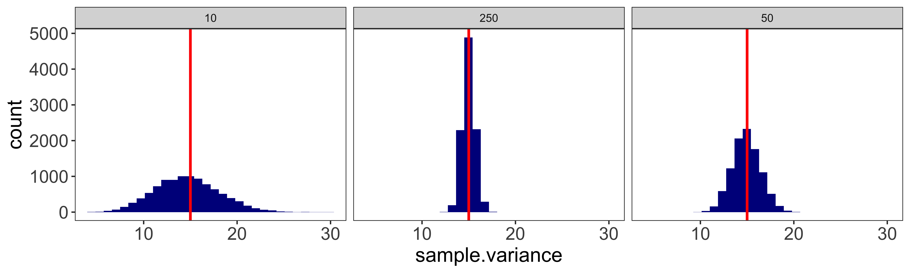
In other words, sometimes the sample standard deviation (\(s_x\)) will be bigger than the population standard deviation (\(\sigma_x\)), and sometimes smaller. The smaller our sample size, the more variable the sample standard deviation will be around the population standard deviation.
Sampling distribution of t-statistic
Because the sample standard deviation is subject to sampling variability, if we calculate the equivalent of a Z-statistic, but using the sample standard deviation instead of the population standard deviation:
\(t_{\bar x} = \frac{(\bar x-mu)}{s_x / \sqrt n}\)
this statistic will not follow the standard normal (Z) distribution. This is entirely because our sample standard deviation also tends to vary from sample to sample.
The sampling distribution of this “t” statistic reflects the variation of both the sample mean as well as the sample variance. The sampling distribution of the t statistic is effectively a weighted mixture of many gaussian distributions, each with a different standard deviation (reflecting the sampling distribution of the sample variance). This is known as the (Student’s) T distribution. And this is the distribution we will be using to calculate null hypothesis tests and confidence intervals in situations when we must estimated the population standard deviation from the sample.
We can simulate the distribution of a t-statistic, and compare it to the standard normal (Z) distribution.
mu.x = 100 # population value
sd.x = 15 # population value
n = 3 # small sample size to highlight t distribution tails
sample.n = function(n){rnorm(n, mu.x, sd.x)}
calculate.t = function(x){(mean(x) - mu.x)/(sd(x)/sqrt(length(x)))} # uses sample sd
calculate.z = function(x){(mean(x) - mu.x)/(sd.x /sqrt(length(x)))} # uses population sd
sample.ts = replicate(10000, calculate.t(sample.n(n)))
sample.zs = replicate(10000, calculate.z(sample.n(n)))
df = rbind(data.frame(value=sample.ts, statistic="T"),
data.frame(value=sample.zs, statistic="Z"))
ggplot(df, aes(x=value, fill=statistic))+
geom_histogram(position="identity", binwidth=0.2, alpha=0.5)+
scale_x_continuous(limits=c(-5,5))+
my_theme # consult visualization notes on how to make a plot theme.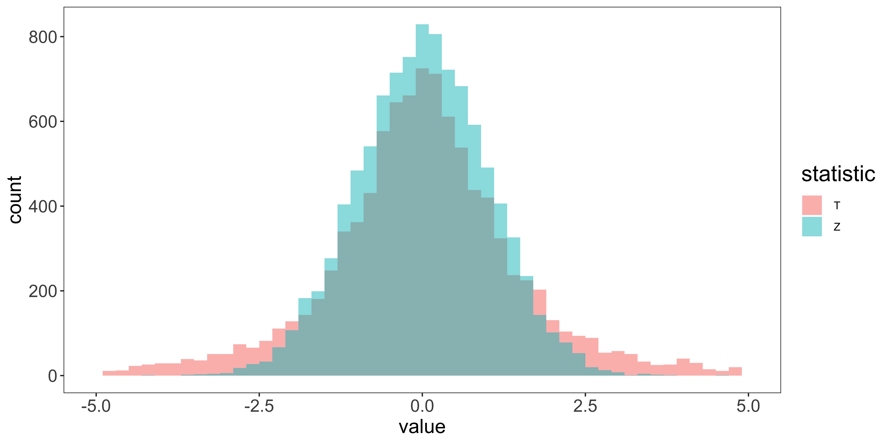
Notice that with our small sample size (3), the tails of the t-distribution are considerably “heavier” than those of the standard normal distribution. With small ns, the standard deviation of the t distribution is larger than 1, and it has a kurtosis much greater than that of a normal.
We can see the deviation of the T-distribution from a standard normal distribution much more clearly using QQ plots:
qs = seq(0.01, 0.99, by=0.01)
df.qs = data.frame(quantile.P = qs,
q.val.Normal = qnorm(qs),
q.val.t = quantile(sample.ts,qs),
q.val.z = quantile(sample.zs,qs))
ggplot(df.qs, aes(q.val.Normal, q.val.z))+
geom_point(col="blue", cex=2)+
geom_line(col='blue', size=0.75)+
geom_point(aes(y=q.val.t), col="red", cex=2)+
geom_line(aes(y=q.val.t), col='red', size=0.75)+
geom_abline(position="identity")+
xlab("Standard normal quantile")+
ylab("Sampling dist of statistic quantile")+
my_theme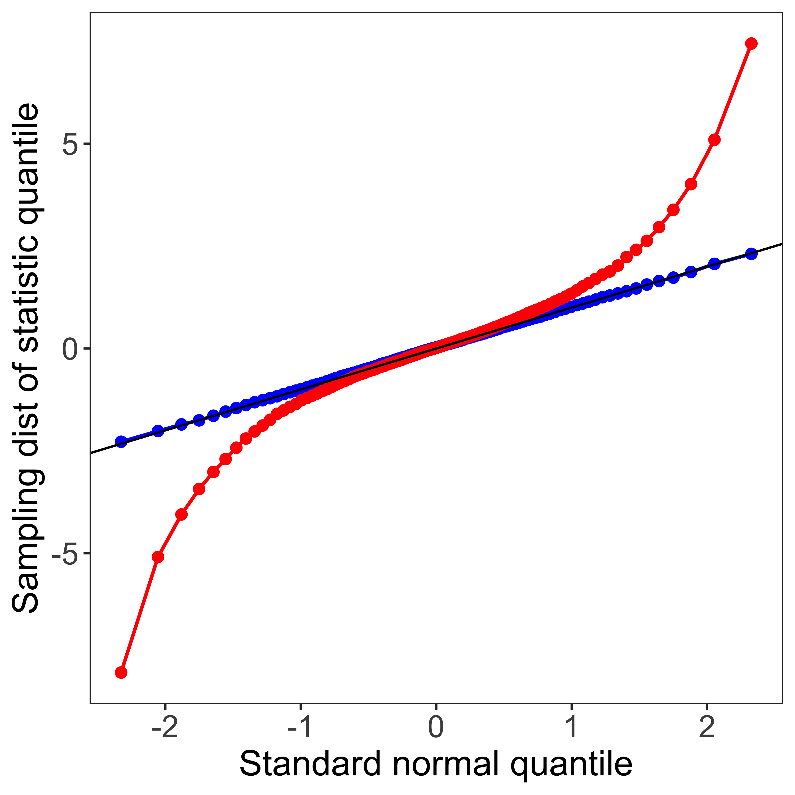
The blue line corresponds to the qq-plot for sample z statistics, and the red line for sampled t statistics, compared to the standard normal distribution. This display highlights that the heavy tails of the sampling distribution of the t statistic have a huge impact on extreme quantiles: the z statistic corresponding to the 98th percentile is about qnorm(0.98)=2, but the corresponding 0.98 quantile for a t distribution with n=3 is about qt(0.98,2)=5. Likewise, while a statistic of 2 corresponds to the pnorm(2)=98th percentile of the z distribution, it is the pt(2,2)=91st percentile of the t distribution. Consequently, if we define a 95% confidence interval as \(\pm 1.96 s_{\bar x}\) (as we would using the z distribution), we only get a 1-2*pt(-1.96,2)=81% confidence interval out. Similarly, if we reject a t-statistic based on a critical z value chosen for \(\alpha=0.05\), our false-alarm rate will actually be 19%.
T-distribution
Consequently, the sampling distribution of the t-statistic is not a standard normal, but is a T distribution with a “degrees of freedom” parameter:
\(df = \nu = n-1\) (this is pronounced “nu,” but normally we will just refer to it as degrees of freedom)
We can show that the sampled t statistics follow this t-distribution by looking at the qq-plot comparing sampled t statistics to the theoretical t distribution:
df = rbind(data.frame(value=sample.ts, what="sample t stats"),
data.frame(value=rt(length(sample.ts), n-1), what="t distribution samples"))
g1 = ggplot(df, aes(x=value, fill=what))+
geom_histogram(position="identity", binwidth=0.2, alpha=0.5)+
scale_x_continuous(limits=c(-5,5))+
my_theme # consult visualization notes on how to make a plot theme.
qs = seq(0.01, 0.99, by=0.01)
df.qs = data.frame(quantile.P = qs,
q.val.t.theoretical = qt(qs,n-1),
q.val.t.samples = quantile(sample.ts,qs))
g2 = ggplot(df.qs, aes(q.val.t.theoretical, q.val.t.samples))+
geom_point(col="red", cex=2)+
geom_line(col='red', size=0.75)+
geom_abline(position="identity")+
my_theme
library(gridExtra)
grid.arrange(g1,g2,ncol=2)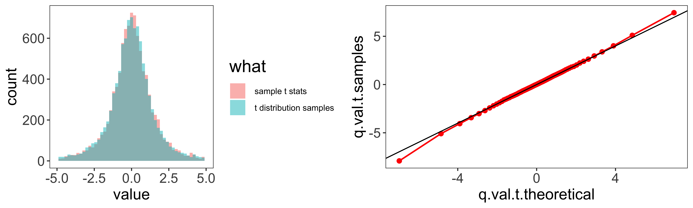
Degrees of freedom.
As our sample size increases, our degrees of freedom increase. This means that the sampling distribution of the sample variance has less variability, and as a consequence, the t-distribution looks more normal.
t = seq(-5,5,by=0.05)
df = rbind(data.frame(t=t, pt=dnorm(t), df="Normal"),
data.frame(t=t, pt=dt(t,100), df="100"),
data.frame(t=t, pt=dt(t,30), df="30"),
data.frame(t=t, pt=dt(t,10), df="10"),
data.frame(t=t, pt=dt(t,3), df="5"),
data.frame(t=t, pt=dt(t,1), df="1"))
ggplot(df, aes(x=t,y=pt,color=as.factor(df)))+
geom_line(position="identity", size=1)+
scale_color_manual(values = c("black", "red", "blue", "green", "orange", "magenta"))+
my_themeAs we see, when n is larger than about 30, the t distribution is pretty close to the normal distribution, so its deviation won’t matter for all but the most extreme quantiles.
Summary.
In short, when we use the sample standard deviation to calculate a statistic, (as we usually will), we use the t distribution with \(n-1\) degrees of freedom rather than the standard normal distribution.
In R, we can get the T distribution’s density, cumulative probability, quantile, and random samples with dt(x,df), pt(x,df), qt(q,df), and rt(n,df), respectively.